<!DOCTYPE html PUBLIC "-//W3C//DTD XHTML 1.0 Transitional//EN" "http://www.w3.org/TR/xhtml1/DTD/xhtml1-transitional.dtd">
<html xmlns="http://www.w3.org/1999/xhtml">
<head>
<meta name="generator" content="NanoBlogger 3.1" />
<meta name="robots" content="all" />
<meta name="revisit-after" content="31 days" />
<meta http-equiv="Content-Type" content="text/html; charset=iso-8859-1" />

<title>Kurt's Weblog: May 2008 Archives</title>

<link rel="stylesheet" href="../styles/nb_default.css" type="text/css" />
<link rel="shortcut icon" href="../images/favicon.ico" />
<link rel="alternate" type="application/rss+xml" title="RSS 2.0" href="../rss.xml" />
<link rel="alternate" type="application/rss+xml" title="RSS 1.0" href="../index.xml" />
<link rel="alternate" type="application/atom+xml" title="Atom 0.3" href="../atom.xml" />

</head>

<body>

<div id="banner">
<h1><a href="../index.html" accesskey="1">Kurt's Weblog</a></h1>
<span class="description">electronic work log</span>
</div>

<div id="content">

<div class="blog">
<div id="menu">
	<a href="../index.html">Main</a>
</div>
</div>

<div class="blog">
<div class="item">
<a id="e2008-05-31T07_08_56.txt" name="e2008-05-31T07_08_56.txt"></a>
<h2 class="date">05.31.2008 07:08</h2>
<div class="blogbody">
<h3 class="title">Under Phoenix</h3>
<div class="item-description">
Check out this raw EDR (Experimental Data Record) that came down from
Phoenix last night!  This photo was taken by the robotic arm camera
looking under the spacecraft.  I've rotated the image, but otherwise
this is a completely raw image.
<br /><br />
<a href="phoenix.lpl.arizona.edu/images.php?gID=1018&cID=26.webloc">RS005EFF896663219_11730MDM1.jpg</a> [phoenix lpl EDR page]
<br /><br />
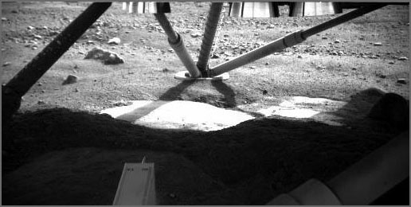
<br /><br />
<pre>The Robotic Arm Camera on NASA's Phoenix Mars Lander captured this
image underneath the lander on the fifth Martian day, or sol, of the
mission. Descent thrusters on the bottom of the lander are visible at
the top of the image.
<br /><br />
This view from the north side of the lander toward the southern leg
shows smooth surfaces cleared from overlying soil by the rocket
exhaust during landing. One exposed edge of the underlying material
was seen in Sol 4 images, but the newer image reveals a greater extent
of it. The abundance of excavated smooth and level surfaces adds
evidence to a hypothesis that the underlying material is an ice table
covered by a thin blanket of soil.
.
The bright-looking surface material in the center, where the image is
partly overexposed may not be inherently brighter than the foreground
material in shadow.
...</pre>
<br /><br />
<a href="http://www.nasa.gov/mission_pages/phoenix/images/press/20080531.html>Hard Substrate, Possibly Ice, Uncovered Under the Mars Lander</a> [nasa.gov]
</div>
</div>

<div class="posted">
<br />Posted by <span class="item-creator">Kurt</span>
| <a class="link" href="2008-05.html#e2008-05-31T07_08_56.txt">Permalink</a>

<!-- <br /><a href="archives/2008-06-01T22_24_51.html#comments">Comments</a> -->
</div>
</div>
<div class="item">
<a id="e2008-05-30T17_52_35.txt" name="e2008-05-30T17_52_35.txt"></a>
<h2 class="date">05.30.2008 17:52</h2>
<div class="blogbody">
<h3 class="title">Mac crash and recovery</h3>
<div class="item-description">
This morning in the middle of time critical process, my mac started
acting really crazy.  Photoshop stopped working.  Then a couple
minutes later, Illustrator stopped working.  I looked in the system logs
and saw what looked like really bad signs...
<pre><b>May 30 07:52:19 laptop</b> [0x0-0x1b01b].com.adobe.illustrator[338]:
objc[338]: Class EpicPanel is implemented in both /Applications/Adobe
Illustrator CS3/Adobe
Illustrator.app/Contents/Frameworks/adobe_personalization.framework/adobe_personalization
and /Applications/Adobe Illustrator CS3/Adobe
Illustrator.app/Contents/Framework
s/adobe_registration.framework/adobe_registration. Using
implementation from /Applications/Adobe Illustrator CS3/Adobe
Illustrator.app/Contents/Frameworks/adobe_registration.framework/adobe_registration.</pre>
Disk corruption?  I tried to recover with disk utilities after booting from
a 10.5 install disk and it failed.
<pre>Checking Catalog file.
Invalid key length
...
Keys out of order
Failed to repair HFS plus volume
Rebuilding catalog B tree failed
</pre>
And then the mac would no longer boot.  I found an article on
apple.com talking about <a href="http://www.alsoft.com/DiskWarrior/">DiskWarrior</a>.  I bought a copy.  I then mounted
my laptop as a firewire drive on another 10.5 mac (boot holding 'T')
and was able to mount the drive.  I copied the entire drive as a
backup.  After the couple hours of backing up, I fired up DiskWarrior4
on the other mac and pointed it at the mounted laptop disk.
<br /><br />
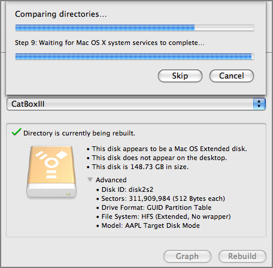
<br /><br />
After the scan, I got a report with a number of problems.
<br /><br />
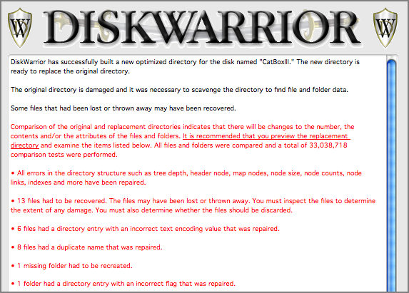
<br /><br />
I hit repair and 15 minutes later, I unmounted the laptop and
rebooted.  Fantastically, I have a working laptop again!  Photoshop
works smoothly again.  I might be missing some things here or there, 
but I am back in business.
<br /><br />
I tried doing a bunch of work on redhat Enterprise WS 4 box, but I am
just not as fast at pushing media on linux.  I was not nearly as useful
to the team without my laptop and a functioning copy of CS3.
<br /><br />
I'll be keeping an eye on this laptop and thanks to Val, Abby, and Linda
for the quick help!
</div>
</div>

<div class="posted">
<br />Posted by <span class="item-creator">Kurt</span>
| <a class="link" href="2008-05.html#e2008-05-30T17_52_35.txt">Permalink</a>

<!-- <br /><a href="archives/2008-05-31T07_08_56.html#comments">Comments</a> -->
</div>
</div>
<div class="item">
<a id="e2008-05-30T17_32_32.txt" name="e2008-05-30T17_32_32.txt"></a>
<h2 class="date">05.30.2008 17:32</h2>
<div class="blogbody">
<h3 class="title">Phx makes slashdot again</h3>
<div class="item-description">
We did another press conference today and this one was picked up by slashdot:
<a href="http://science.slashdot.org/article.pl?sid=08/05/30/2249210">Phoenix Mars Lander Deploys Robotic Arm, Possibly Finds Ice</a>
<pre>The Phoenix Mars Lander has successfully deployed its robotic arm and
tested other instruments including a laser designed to detect dust,
clouds, and fog. The arm will be used to dig up samples of the Martian
surface which will be analyzed as a possible habitat for life. A
camera on the arm will allow pictures to be taken of the ground
directly beneath the lander. The camera has already seen what may be
ice, which was exposed when the soil was disturbed by the landing. The
data collected by the arm will be compared to recent findings which
suggest that water on Mars may have been too salty for most known
forms of life.</pre>
<br /><br />
<a href="http://phoenix.lpl.arizona.edu/05_29_pr.php">NASA's Phoenix Mars Lander Puts Arm and Other Tools to Work</a> [Phoenix LPL]
<pre>May 29, 2008 -- TUCSON, Ariz. - NASA's Mars lander is returning more
detailed images from the Martian surface and is now preparing its
instruments for science operations.
.
Phoenix transmitted a 360-degree panorama of its frigid Martian world,
freed its nearly 8-foot robotic arm, tested a laser instrument for
studying dust and clouds, and transmitted its second weather report on
Wednesday evening.
.
"We've imaged the entire landing site, all 360 degrees of it. We see
it all," said Phoenix principal investigator Peter Smith, University
of Arizona, Tucson. "You can see the lander in a fish-eye view that
goes all the way out to the entire horizon "We are now making plans
for where to dig first, and what we'll save for later."
.
Commands were communicated to Phoenix to rotate the robotic arm's
wrist to unlatch its launch lock, raise the forearm and move it
upright to release the elbow restraint.
.
"We're pleased that we successfully unstowed the robotic arm. In fact,
this is the first time we have moved the arm in about a year," said
Matthew Robinson of NASA's Jet Propulsion Laboratory in Pasadena,
Calif. The arm deployment brings the Phoenix mission to a significant
milestone.
...</pre>
</div>
</div>

<div class="posted">
<br />Posted by <span class="item-creator">Kurt</span>
| <a class="link" href="2008-05.html#e2008-05-30T17_32_32.txt">Permalink</a>

<!-- <br /><a href="archives/2008-05-30T17_52_35.html#comments">Comments</a> -->
</div>
</div>
<div class="item">
<a id="e2008-05-29T18_47_51.txt" name="e2008-05-29T18_47_51.txt"></a>
<h2 class="date">05.29.2008 18:47</h2>
<div class="blogbody">
<h3 class="title">GEBCO Japan poster</h3>
<div class="item-description">
This week, the UNH GEBCO students presented this poster at the annual
GEBCO meeting in Japan.
<br /><br />
Monahan, Schwehr, Wigley, Tinmouth, Goncalves, Jinidasa, Uddin, Ito,
"<em>GEBCO Visual Library, Proof of Concept</em>".
<pre>The GEBCO Visual Library is a conceptual model that could incorporate,
in the broadest sense, all oceanographic and hydrographic research
compiled from various sources and allows it to be geo-referenced in an
easily accessible and familiar visual interface. Google Earth, a
freely-available virtual globe, was chosen as the platform due to its
user-friendliness to a global community of varying educational
backgrounds.
.
The objective is to provide the user with as much scientific
information as possible for any chosen location within the global
oceans. The initial conceptual model has concentrated on multibeam
bathymetry only. Data is presented in the form of an image of the
bathymetric data with figure caption, research publication reference,
and abstract. Information is positioned using Google Earth
"thumbtacks" displayed over the GEBCO world chart. These "thumbtacks"
can be selected to provide pop-up windows, which display the embedded
bathymetric image together with the other contents mentioned above.
.
The GEBCO Visual Library is envisioned to be a resource that will
facilitate the dissemination of oceanographic information amongst an
interdisciplinary international community with diverse requirements.</pre>
<br /><br />
<a href="http://vislab-ccom.unh.edu/~schwehr/papers/200805-gebco-poster.txt">complete text</a>
<br /><br />
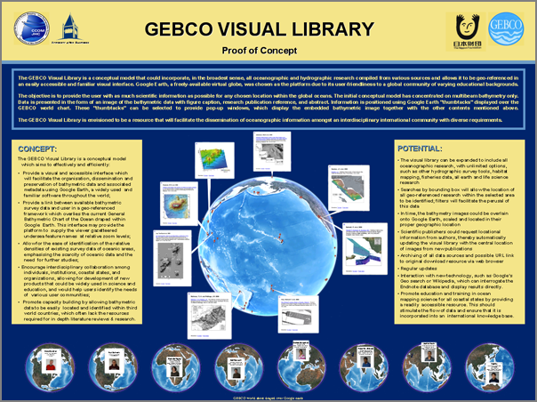
</div>
</div>

<div class="posted">
<br />Posted by <span class="item-creator">Kurt</span>
| <a class="link" href="2008-05.html#e2008-05-29T18_47_51.txt">Permalink</a>

<!-- <br /><a href="archives/2008-05-30T17_32_32.html#comments">Comments</a> -->
</div>
</div>
<div class="item">
<a id="e2008-05-29T17_30_20.txt" name="e2008-05-29T17_30_20.txt"></a>
<h2 class="date">05.29.2008 17:30</h2>
<div class="blogbody">
<h3 class="title">A little more from Mars</h3>
<div class="item-description">
Here is a picture of me at the Science Operations Center (SOC) in
Tucson about an hour before Phoenix landed on Mars.  This is me
in the studio control area where I controlled some of the 60 ft
screen in the Tucson SOC public area. 
<br /><br />

<br /><br />
Today the mission released the first full mosaic from the site:  <a href="http://photojournal.jpl.nasa.gov/catalog/PIA10726">PIA10726: Sweeping Martian Plains</a> [Photojournal]
<br /><br />
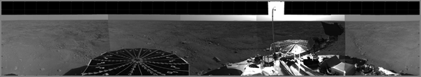
<br /><br />
For the last press conference, I did the labeling for two of the
graphics, which was fun.  I think they turned out pretty well.  
<pre>...
Phoenix was able to determine the size of the rocks based on
three-dimensional views from stereoscopic images taken by the lander's
7-foot mast camera, called the Surface Stereo Imager. The stereo pair
of images enable depth perception, much the way a pair of human eyes
enable people to gauge the distance to nearby objects.
.
The rock measurements were made by a visualization tool known as Viz,
developed at NASA's Ames Research Laboratory. The shadow cast by the
camera on the Martian surface appears somewhat disjointed because the
camera took the images in the mosaic at different times of day.
...</pre>
<a href="http://www.nasa.gov/mission_pages/phoenix/images/press/sizes-sol3-v8.html">sizes-sol3-v8.html</a>
<br /><br />
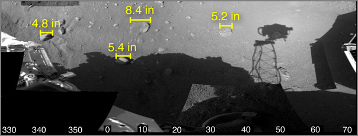
<br /><br />
And the locations: <a href="http://www.nasa.gov/mission_pages/phoenix/images/press/location-sol3-v8_001.html">location-sol3-v8_001.html</a> [nasa.gov]
<br /><br />
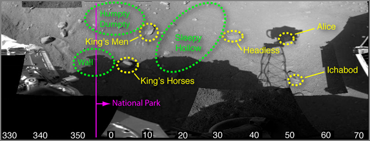
<br /><br />
You get a glimpse into my obsessive versioning of Illustrator PDF's
that somehow made it out to the public.
</div>
</div>

<div class="posted">
<br />Posted by <span class="item-creator">Kurt</span>
| <a class="link" href="2008-05.html#e2008-05-29T17_30_20.txt">Permalink</a>

<!-- <br /><a href="archives/2008-05-29T18_47_51.html#comments">Comments</a> -->
</div>
</div>
<div class="item">
<a id="e2008-05-28T11_54_18.txt" name="e2008-05-28T11_54_18.txt"></a>
<h2 class="date">05.28.2008 11:54</h2>
<div class="blogbody">
<h3 class="title">Viz image from Phoenix</h3>
<div class="item-description">
Viz and the Stereo Pipeline just made a release from Phoenix:
<br /><br />
<a href="http://www.nasa.gov/mission_pages/phoenix/images/press/Viz-RA-workspace3.html">Viz false color depth coded workspace terrain model</a>
<pre>False color terrain model of Phoenix workspace
.
This is a terrain model of Phoenix's Robotic Arm workspace. It has
been color coded by depth with a lander model for context. The model
has been derived using images from the depth perception feature from
Phoenix's Surface Stereo Imager (SSI). Red indicates low-lying areas
that appear to be troughs. Blue indicates higher areas that appear to
be polygons.
.
The Phoenix Mission is led by the University of Arizona, Tucson, on
behalf of NASA. Project management of the mission is by NASA's Jet
Propulsion Laboratory, Pasadena, Calif. Spacecraft development is by
Lockheed Martin Space Systems, Denver.
.
Image credit: NASA/JPL-Caltech/University of Arizona/Texas A&M
University/NASA Ames
</pre>
<br /><br />
<a href="../attachments/2008-05/Viz-RA-workspace.png">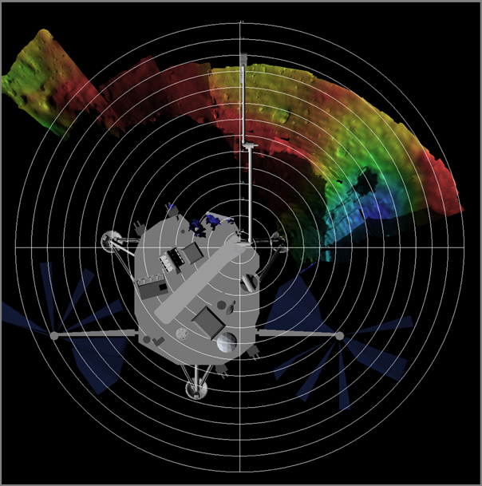</a>
</div>
</div>

<div class="posted">
<br />Posted by <span class="item-creator">Kurt</span>
| <a class="link" href="2008-05.html#e2008-05-28T11_54_18.txt">Permalink</a>

<!-- <br /><a href="archives/2008-05-29T17_30_20.html#comments">Comments</a> -->
</div>
</div>
<div class="item">
<a id="e2008-05-28T11_40_26.txt" name="e2008-05-28T11_40_26.txt"></a>
<h2 class="date">05.28.2008 11:40</h2>
<div class="blogbody">
<h3 class="title">Firefox printing tip</h3>
<div class="item-description">
I just found out that firefox now lets you select if you want
background colors and images be printed.  Now I no why some of my pdfs
look weird.  I needed to check the background colors.
<br /><br />
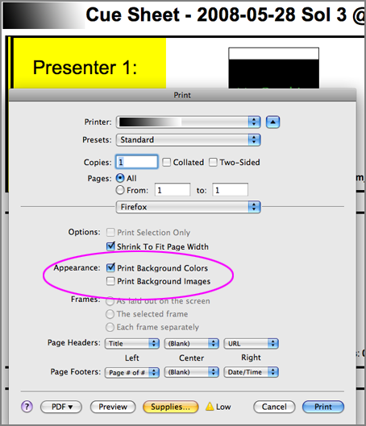
</div>
</div>

<div class="posted">
<br />Posted by <span class="item-creator">Kurt</span>
| <a class="link" href="2008-05.html#e2008-05-28T11_40_26.txt">Permalink</a>

<!-- <br /><a href="archives/2008-05-28T11_54_18.html#comments">Comments</a> -->
</div>
</div>
<div class="item">
<a id="e2008-05-26T15_52_50.txt" name="e2008-05-26T15_52_50.txt"></a>
<h2 class="date">05.26.2008 15:52</h2>
<div class="blogbody">
<h3 class="title">Excel and Lotus 1-2-3 are not databases</h3>
<div class="item-description">
As many people have discovered (and now the Fderal Election
Commission), Excel and 1-2-3 are not database applications.
My next paper is based on 5 million data points for one year.
Excel is only going to work for small summary statistics.
<br /><br />
Thanks to Rob for this: <a href="http://www.politico.com/news/stories/0508/10609.html">FEC, media can't handle Obama jackpot</a>
<pre>A milestone of sorts was reached earlier this year, when Obama, the
Illinois senator whose revolutionary online fundraising has
overwhelmed Clinton, filed an electronic fundraising report so large
it could not be processed by popular basic spreadsheet applications
like Microsoft Excel 2003 and Lotus 1-2-3.
.
Those programs can't download data files with more than 65,536 rows or
256 columns.
...</pre>
</div>
</div>

<div class="posted">
<br />Posted by <span class="item-creator">Kurt</span>
| <a class="link" href="2008-05.html#e2008-05-26T15_52_50.txt">Permalink</a>

<!-- <br /><a href="archives/2008-05-28T11_40_26.html#comments">Comments</a> -->
</div>
</div>
<div class="item">
<a id="e2008-05-25T19_51_14.txt" name="e2008-05-25T19_51_14.txt"></a>
<h2 class="date">05.25.2008 19:51</h2>
<div class="blogbody">
<h3 class="title">Mars Mosaic on the Web</h3>
<div class="item-description">
Didn't know these would be going out.
<br /><br />
NASA has put raw mosaics on the web...  <a
href="http://www.nasa.gov/mission_pages/phoenix/images/raw/MOSAIC/S_000EFF_CYL_SR10CA8_R888M2.html">S_000EFF_CYL_SR10CA8_R888M2.html</a>
<br /><br />
<a href="http://www.nasa.gov/images/content/229956main_S_000EFF_CYL_SR10CA8_R888M2.jpg"></a>
<br /><br />
<a href="http://fawkes4.lpl.arizona.edu/images.php?gID=0&cID=7">All Raw Images and Mosaics</a>
</div>
</div>

<div class="posted">
<br />Posted by <span class="item-creator">Kurt</span>
| <a class="link" href="2008-05.html#e2008-05-25T19_51_14.txt">Permalink</a>

<!-- <br /><a href="archives/2008-05-26T15_52_50.html#comments">Comments</a> -->
</div>
</div>
<div class="item">
<a id="e2008-05-25T17_53_03.txt" name="e2008-05-25T17_53_03.txt"></a>
<h2 class="date">05.25.2008 17:53</h2>
<div class="blogbody">
<h3 class="title">Phx on Mars</h3>
<div class="item-description">
We are on the ground waiting for the first big downlink.
<br /><br />
<a href="http://www.nytimes.com/2008/05/26/science/26mars.html?ref=space">NASA Spacecraft Appears to Have Landed on Mars</a>
<br /><br />
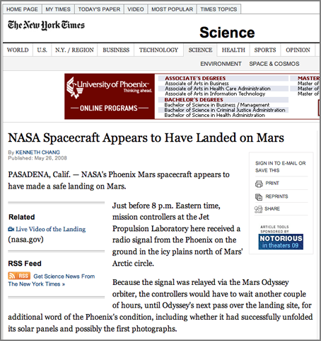
</div>
</div>

<div class="posted">
<br />Posted by <span class="item-creator">Kurt</span>
| <a class="link" href="2008-05.html#e2008-05-25T17_53_03.txt">Permalink</a>

<!-- <br /><a href="archives/2008-05-25T19_51_14.html#comments">Comments</a> -->
</div>
</div>
<div class="item">
<a id="e2008-05-25T10_29_24.txt" name="e2008-05-25T10_29_24.txt"></a>
<h2 class="date">05.25.2008 10:29</h2>
<div class="blogbody">
<h3 class="title">No TCM 6 for Phx</h3>
<div class="item-description">
<a href="http://www.jpl.nasa.gov/news/news.cfm?release=2008-079b">No
Final Nudge Needed for Phoenix</a> [jpl]
<pre>NASA's Phoenix Mars Lander will reach Mars this evening with no
further adjustments to its flight path. Mission controllers decided
early Sunday not to use the last possible time for a trajectory
correction maneuver, eight hours before landing.
.
The first possible time for confirmation that Phoenix has landed will
be at 4:53 p.m. Pacific Time today. The landing would have happened 15
minutes earlier on Mars, but radio signals take 15 minutes to travel
from Mars to Earth at the distance separating the two planets today,
171 million miles.</pre>
</div>
</div>

<div class="posted">
<br />Posted by <span class="item-creator">Kurt</span>
| <a class="link" href="2008-05.html#e2008-05-25T10_29_24.txt">Permalink</a>

<!-- <br /><a href="archives/2008-05-25T17_53_03.html#comments">Comments</a> -->
</div>
</div>
<div class="item">
<a id="e2008-05-25T07_26_04.txt" name="e2008-05-25T07_26_04.txt"></a>
<h2 class="date">05.25.2008 07:26</h2>
<div class="blogbody">
<h3 class="title">Turkey Vultures to detect natural gas leaks</h3>
<div class="item-description">
Jeff R. told me about this last night.  Crazy!
<br /><br />
<a href="http://www.sierrapotomac.org/W_Needham/TurkeyVulture_051125.htm"> Common Name: Turkey Vulture - Scientific Name:  Cathartes aura</a>
<pre>...
Turkey vultures are attracted by the smell of mercaptan, one of the
gasses emitted during carrion decomposition.  Ethyl mercaptan is added
to natural gas to provide a means of leak detection from the otherwise
odorless substance. Engineers were sometimes able to find pipeline
leaks when turkey vultures were seen circling above the gas lines. The
turkey vulture can detect concentrations in the range of parts per
trillion and can discern the direction of their origin.
...</pre>
</div>
</div>

<div class="posted">
<br />Posted by <span class="item-creator">Kurt</span>
| <a class="link" href="2008-05.html#e2008-05-25T07_26_04.txt">Permalink</a>

<!-- <br /><a href="archives/2008-05-25T10_29_24.html#comments">Comments</a> -->
</div>
</div>
<div class="item">
<a id="e2008-05-25T05_50_18.txt" name="e2008-05-25T05_50_18.txt"></a>
<h2 class="date">05.25.2008 05:50</h2>
<div class="blogbody">
<h3 class="title">Landing on Mars this afternoon</h3>
<div class="item-description">
Just under 11 hours until landing.
<br /><br />
<a href="http://www.boston.com/news/science/articles/2008/05/25/spacecraft_on_track_to_make_historic_mars_landing/">Spacecraft on track to make historic Mars landing</a> [boston.com/AP]
<pre>PASADENA, Calif.-A three-legged NASA spacecraft was closing in on Mars
Sunday for what scientists hope will be the first-ever touchdown near
Mars' north pole to study whether the permafrost could have supported
primitive life.  more stories like this
.
The time it takes the Phoenix Mars Lander to streak through the
atmosphere and set down on the dusty surface has been dubbed "the
seven minutes of terror" for good reason. More than half of the
world's attempts to land on Mars have ended in failures.
.
"I'm a little nervous on the inside. I'm getting butterflies," Peter
Smith, principal investigator from the University of Arizona, Tucson,
said on the eve of the landing. "We bet the whole farm on this safe
landing and we can't do our science without this safe landing."
...</pre>
and
<a href="http://www.boston.com/news/science/articles/2008/05/25/mars_spacecraft_faces_riskiest_part_of_mission/">Mars spacecraft faces riskiest part of mission</a> [boston.com/AP]
<pre>PASADENA, Calif.-After a nearly 10-month journey, a NASA
spacecraft will land softly Sunday on the northern polar region of
Mars, if all goes as planned.  more stories like this
.
The Phoenix Mars Lander is set to touch down in a broad, shallow
valley in the Martian arctic plains believed to hold a vast supply of
underground ice. Phoenix's job during the 90-day mission is to
excavate the soil and ice to study whether the site could have
supported microbial life.
...</pre>
</div>
</div>

<div class="posted">
<br />Posted by <span class="item-creator">Kurt</span>
| <a class="link" href="2008-05.html#e2008-05-25T05_50_18.txt">Permalink</a>

<!-- <br /><a href="archives/2008-05-25T07_26_04.html#comments">Comments</a> -->
</div>
</div>
<div class="item">
<a id="e2008-05-24T14_29_57.txt" name="e2008-05-24T14_29_57.txt"></a>
<h2 class="date">05.24.2008 14:29</h2>
<div class="blogbody">
<h3 class="title">Phx landing from today's video</h3>
<div class="item-description">
From today's press conference video, I grabbed this frame.  Landing in less than 26 hours.
<br /><br />
Images are up on the <a
href="http://photojournal.jpl.nasa.gov/mission/Phoenix">Phoenix
Photojournal</a> page (and many other places).  e.g. <a
href="http://photojournal.jpl.nasa.gov/catalog/PIA10666">PIA10666</a>
<br /><br />

</div>
</div>

<div class="posted">
<br />Posted by <span class="item-creator">Kurt</span>
| <a class="link" href="2008-05.html#e2008-05-24T14_29_57.txt">Permalink</a>

<!-- <br /><a href="archives/2008-05-25T05_50_18.html#comments">Comments</a> -->
</div>
</div>
<div class="item">
<a id="e2008-05-24T11_05_40.txt" name="e2008-05-24T11_05_40.txt"></a>
<h2 class="date">05.24.2008 11:05</h2>
<div class="blogbody">
<h3 class="title">Landing tomorrow</h3>
<div class="item-description">
We are landing in 1 day and 5 hours on the surface of Mars.  There is
a press briefing today at 12 PM PST and 3 PM EST.
<br /><br />
<a img src="../attachments/2008-5/phx-one-day-to-go.png"/>
</div>
</div>

<div class="posted">
<br />Posted by <span class="item-creator">Kurt</span>
| <a class="link" href="2008-05.html#e2008-05-24T11_05_40.txt">Permalink</a>

<!-- <br /><a href="archives/2008-05-24T14_29_57.html#comments">Comments</a> -->
</div>
</div>
<div class="item">
<a id="e2008-05-23T15_13_28.txt" name="e2008-05-23T15_13_28.txt"></a>
<h2 class="date">05.23.2008 15:13</h2>
<div class="blogbody">
<h3 class="title">noaadata 0.38 release</h3>
<div class="item-description">
I've had some pretty serious bugs in my noaadata releases up till now.
I think I've nocked out a few of them.  The worst was that the nmea
module was not being installed.  Now I need to refactor my package
such that I am less likely to have a module name collision with other
packages.  <b>nmea</b> is too likely to come from other packages.
<br /><br />
<a href="http://vislab-ccom.unh.edu/~schwehr/software/noaadata/downloads/noaadata-py-0.38.tar.bz2">http://vislab-ccom.unh.edu/~schwehr/software/noaadata/downloads/noaadata-py-0.38.tar.bz2</a>
<br /><br />
<a href="http://pypi.python.org/pypi/noaadata-py/0.38">pypi noaadata</a>
<br /><br />
This time I tested just the setup.py installed code on a server and
ais_normalize.py finally runs.
<br /><br />
Setting up a pile of new macs with OSX 10.5 is a good way to test out
procedures.  My tests show that my procedures really need some
improvement/streamlining!  I had to update my geodjango info file too.
Ouch, I forgot how slow a single G4 CPU is compared to a quad core
Intel 3GHz xeon mac.  But, the G4 makes a fine web and file server.
It's got a BlackMagic video card in it, but that is not likely to stay
in that machine.
<pre>% cd /sw/fink/10.5/local/main/finkinfo
% mkdir sci web
% cd web
% wget http://vislab-ccom.unh.edu/~schwehr/software/fink/geodjango/geodjango-py.info
% cd ../sci
% wget http://vislab-ccom.unh.edu/~schwehr/software/noaadata/downloads/noaadata-py.info
% fink install noaadata-py25-bin geodjango</pre>
</div>
</div>

<div class="posted">
<br />Posted by <span class="item-creator">Kurt</span>
| <a class="link" href="2008-05.html#e2008-05-23T15_13_28.txt">Permalink</a>

<!-- <br /><a href="archives/2008-05-24T11_05_40.html#comments">Comments</a> -->
</div>
</div>
<div class="item">
<a id="e2008-05-23T11_40_28.txt" name="e2008-05-23T11_40_28.txt"></a>
<h2 class="date">05.23.2008 11:40</h2>
<div class="blogbody">
<h3 class="title">libgeos3 and postgis83 for mapserver</h3>
<div class="item-description">
In the quest for total focus on libgeos3, I've created a package for
mapserver5 that uses libgeos3 and postgis83.  You should also update
your postgis.
<ul><li><a href="http://vislab-ccom.unh.edu/~schwehr/software/fink/postgis.info"
>http://vislab-ccom.unh.edu/~schwehr/software/fink/postgis.info</a></li>
<li><a href="http://vislab-ccom.unh.edu/~schwehr/software/fink/mapserver5.info">
http://vislab-ccom.unh.edu/~schwehr/software/fink/mapserver5.info</a></li>
<li><a href="http://vislab-ccom.unh.edu/~schwehr/software/fink/gdal.info">http://vislab-ccom.unh.edu/~schwehr/software/fink/gdal.info</a></li>
</ul>
We are working to get our production server up to the latest and greatest.
<br /><br />
Also, I completely wedged scanpackages somehow.  It stalled out in
perl somewhere.  I think it somehow corrupted the database when I hit
Ctrl-C at exactly the wrong time.  Here is how I fix it:
<pre>% sudo rm /sw/var/lib/fink/index.db.lock
% sudo mv /sw/var/lib/fink/scanpackages.db /sw/var/lib/fink/scanpackages.db.broken
% fink scanpackages</pre>
</div>
</div>

<div class="posted">
<br />Posted by <span class="item-creator">Kurt</span>
| <a class="link" href="2008-05.html#e2008-05-23T11_40_28.txt">Permalink</a>

<!-- <br /><a href="archives/2008-05-23T15_13_28.html#comments">Comments</a> -->
</div>
</div>
<div class="item">
<a id="e2008-05-23T09_03_17.txt" name="e2008-05-23T09_03_17.txt"></a>
<h2 class="date">05.23.2008 09:03</h2>
<div class="blogbody">
<h3 class="title">Phx on CNN Tech</h3>
<div class="item-description">
Today is a "Quiet Day."  Next press conference is tomorrow.
<br /><br />
<a href="http://www.cnn.com/2008/TECH/space/05/23/mars.lander/index.html?eref=rss_topstories"> NASA preps for '7 minutes of terror' on Mars</a> [CNN Tech]
<pre>...
Everyone on the team is primed and ready to get down to business,
putting the suite of scientific instruments aboard Phoenix to work
analyzing the soils and permafrost of Mars' arctic tundra for
signatures of life, either past or present. iReport.com: Send your
photos, video of space
.
But first, they have to get the lander on the ground, and that's where
the worry comes in. In fact, they have a name for it in the Mars
exploration community -- "seven minutes of terror."
.
Seven minutes is all it takes for a spacecraft travelling neary 13
thousand miles per hour to hit the Martian atmosphere, slam on the
brakes, and reach the ground.
...</pre>
I met Miles without realizing it during MER.  I was working and didn't
notice who was being shown my workstation over my shoulder.  Aurelio told
me after the fact who it was.
<pre>Join Miles O'Brien for an hour-long special about the Mars Lander.</pre>
</div>
</div>

<div class="posted">
<br />Posted by <span class="item-creator">Kurt</span>
| <a class="link" href="2008-05.html#e2008-05-23T09_03_17.txt">Permalink</a>

<!-- <br /><a href="archives/2008-05-23T11_40_28.html#comments">Comments</a> -->
</div>
</div>
<div class="item">
<a id="e2008-05-22T19_44_20.txt" name="e2008-05-22T19_44_20.txt"></a>
<h2 class="date">05.22.2008 19:44</h2>
<div class="blogbody">
<h3 class="title">CIO Article on NASA Portal</h3>
<div class="item-description">
I'm not in a spot where I can comment on this stuff, but here is the article:
<br /><br />
<a href="http://www.cio.com/article/print/365763">NASA Phoenix Mission to Mars: An Out-Of-This-World Content Management Challenge</a> [CIO]
<pre>...
Holm works on the content management part of the mission along with
colleagues including Carla Bitter, education and public outreach
manager for the mission for the University of Arizona, and Charles
White, JPL's expert on virtual world technologies, who heads up the
Second Life work.
...
A key tool the team uses in-house to keep the content organized is
Vignette 7.2 (specifically, Vignette Builder and Vignette Portal),
Holm says. Remember, the mission's content is feeding to podcasts,
NASA TV on the Web, Second Life, and elsewhere. "We're taking the same
content and representing it in many different ways and by all means,"
Holm says.
.
"In previous missions, a system like this didn't exist and people were
sharing images via external drives," Bitter says. Some of the images
are put up immediately and captioned, or sent to museum audiences,
while others are made part of huge mosaic pictures that display the
majesty of what the NASA spacecraft encounters, she says.
...
Externally, the group uses SunGard to host the NASA Portal hardware
and uses eTouch Systems to manage it for the NASA CIO, Holm
says. Akamai handles the caching. NASA TV also gets some additional
streaming assistance from Yahoo, Holm adds.
...</pre>
</div>
</div>

<div class="posted">
<br />Posted by <span class="item-creator">Kurt</span>
| <a class="link" href="2008-05.html#e2008-05-22T19_44_20.txt">Permalink</a>

<!-- <br /><a href="archives/2008-05-23T09_03_17.html#comments">Comments</a> -->
</div>
</div>
<div class="item">
<a id="e2008-05-22T12_40_39.txt" name="e2008-05-22T12_40_39.txt"></a>
<h2 class="date">05.22.2008 12:40</h2>
<div class="blogbody">
<h3 class="title">Press release for Phx</h3>
<div class="item-description">
We just finished up a press conference.  Here is a link to the press
release: <a href="http://phoenix.lpl.arizona.edu/05_22_pr.php">Phoenix
Spacecraft On Course For May 25 Mars Landing</a>
<pre>May 22, 2008 -- With three days and 3 million miles left to fly before
arriving at Mars, NASA's Phoenix spacecraft is on track for its
destination in the Martian arctic.
.
"The latest calculation from our navigation team shows the center of
the area where we're currently headed lies less than eight miles from
the center of our target area," said Barry Goldstein, Phoenix project
manager at NASA's Jet Propulsion Laboratory, Pasadena, Calif. "We may
decide on Saturday that we don't need to use our final opportunity for
fine tuning the trajectory Phoenix is on. Either way, we will continue
to monitor the trajectory throughout Saturday night, on the off chance
we need to execute our contingency maneuver eight hours before entry."
.
The spacecraft is in fine health.
.
"All systems are nominal and stable," said Ed Sedivy, Phoenix
spacecraft program manager for Lockheed Martin Space Systems, Denver,
which built the spacecraft. "We have plenty of propellant, the
temperatures look good and the batteries are fully charged."
...
</pre>
<a href="http://www.nasa.gov/phoenix">www.nasa.gov/phoenix</a><br/>
<a href="http://jpl.nasa.gov/phoenix">jpl.nasa.gov/phoenix</a><br/>
<a href="http://phoenix.lpl.arizona.edu">phoenix.lpl.arizona.edu</a><br/>
<a href="http://photojournal.jpl.nasa.gov/mission/Phoenix">Phoenix Photojournal</a>
<br /><br />
From the JPL website:
<br /><br />
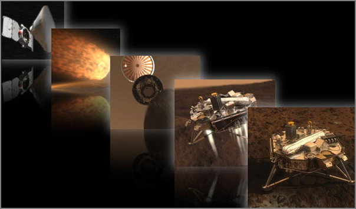
</div>
</div>

<div class="posted">
<br />Posted by <span class="item-creator">Kurt</span>
| <a class="link" href="2008-05.html#e2008-05-22T12_40_39.txt">Permalink</a>

<!-- <br /><a href="archives/2008-05-22T19_44_20.html#comments">Comments</a> -->
</div>
</div>
<div class="item">
<a id="e2008-05-22T10_51_44.txt" name="e2008-05-22T10_51_44.txt"></a>
<h2 class="date">05.22.2008 10:51</h2>
<div class="blogbody">
<h3 class="title">Phoenix press conference today at 11:30 AM PST, 2:30 PM EST</h3>
<div class="item-description">
<a
href="http://www.nasa.gov/mission_pages/phoenix/main/index.html">Phoenix</a>
(NASA mission page) is having a press conference in a few minutes.  You
can watch via <a
href="http://www.nasa.gov/multimedia/nasatv/index.html">NASA TV</a>.
</div>
</div>

<div class="posted">
<br />Posted by <span class="item-creator">Kurt</span>
| <a class="link" href="2008-05.html#e2008-05-22T10_51_44.txt">Permalink</a>

<!-- <br /><a href="archives/2008-05-22T12_40_39.html#comments">Comments</a> -->
</div>
</div>
<div class="item">
<a id="e2008-05-22T10_19_14.txt" name="e2008-05-22T10_19_14.txt"></a>
<h2 class="date">05.22.2008 10:19</h2>
<div class="blogbody">
<h3 class="title">CISCO VPN not working</h3>
<div class="item-description">
Sometimes it works, sometimes it doesn't.  But never is there much in
the way of diagnostics.
<pre>May 20 21:43:21 laptop com.apple.SystemStarter[34]: Starting Cisco Systems VPN Driver
May 20 21:43:23 laptop com.apple.SystemStarter[34]: kextload: extension /System/Library/Extensions/CiscoVPN.kext is already loaded
May 20 21:43:28 laptop kernel[0]: CiscoVPN : attempting to attach to all available ethernet interfaces.
May 20 21:43:28 laptop kernel[0]: CiscoVPN : checking if we are already attached to interface: en1
May 20 21:43:28 laptop kernel[0]: CiscoVPN : no, not yet attached to interface: en1
May 20 21:43:28 laptop kernel[0]: CiscoVPN : interface: en1, filter attached.
May 20 21:43:28 laptop kernel[0]: CiscoVPN : current MTU for en1 is 1500, saving it.
May 20 21:43:28 laptop kernel[0]: CiscoVPN : checking if we are already attached to interface: en0
May 20 21:43:28 laptop kernel[0]: CiscoVPN : no, not yet attached to interface: en0
May 20 21:43:28 laptop kernel[0]: CiscoVPN : interface: en0, filter attached.
May 20 21:43:28 laptop kernel[0]: CiscoVPN : current MTU for en0 is 1500, saving it.
May 20 21:43:28 laptop kernel[0]: CiscoVPN : loading cisco ipsec kernel module.
May 22 10:11:00 laptop [0x0-0xd20d2].com.cisco.VPNClient[21102]: Could not attach to driver. Is kernel module loaded?
May 22 10:11:01 laptop [0x0-0xd20d2].com.cisco.VPNClient[21102]: QString::arg(): Argument missing: Error 51: Unable to communicate with the VPN subsystem.
May 22 10:11:01 laptop [0x0-0xd20d2].com.cisco.VPNClient[21102]:  Please make sure that you have at least one network interface that is currently active
May 22 10:11:01 laptop [0x0-0xd20d2].com.cisco.VPNClient[21102]:  and has an IP address and start this application again., 4
May 22 10:11:04 laptop com.apple.launchd[139] ([0x0-0xd20d2].com.cisco.VPNClient[21102]): Exited with exit code: 255</pre>
The fix:
<pre>sudo /System/Library/StartupItems/CiscoVPN/CiscoVPN restart
Stopping Cisco Systems VPN Driver
kextunload: unload kext /System/Library/Extensions/CiscoVPN.kext succeeded
Starting Cisco Systems VPN Driver
kextload: /System/Library/Extensions/CiscoVPN.kext loaded successfully</pre>
Now the CISCO VPN client works!
</div>
</div>

<div class="posted">
<br />Posted by <span class="item-creator">Kurt</span>
| <a class="link" href="2008-05.html#e2008-05-22T10_19_14.txt">Permalink</a>

<!-- <br /><a href="archives/2008-05-22T10_51_44.html#comments">Comments</a> -->
</div>
</div>
<div class="item">
<a id="e2008-05-21T17_29_05.txt" name="e2008-05-21T17_29_05.txt"></a>
<h2 class="date">05.21.2008 17:29</h2>
<div class="blogbody">
<h3 class="title">Mars24 Clock</h3>
<div class="item-description">
I've heard rumors that there is some slight time offset for Phoenix in
<a href="http://www.giss.nasa.gov/tools/mars24/">Mars 24</a>.  Nice to
see where spacecraft are and what time it is.
<br /><br />
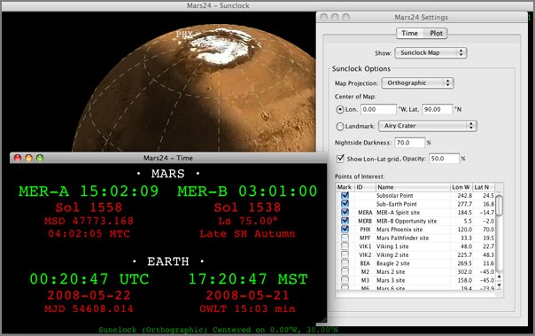
</div>
</div>

<div class="posted">
<br />Posted by <span class="item-creator">Kurt</span>
| <a class="link" href="2008-05.html#e2008-05-21T17_29_05.txt">Permalink</a>

<!-- <br /><a href="archives/2008-05-22T10_19_14.html#comments">Comments</a> -->
</div>
</div>
<div class="item">
<a id="e2008-05-21T17_14_43.txt" name="e2008-05-21T17_14_43.txt"></a>
<h2 class="date">05.21.2008 17:14</h2>
<div class="blogbody">
<h3 class="title">JPL's Planetary PhotoJournal Phoenix Page</h3>
<div class="item-description">
Phoenix does not yet have "Refine results" in the PhotoJounal, but the
do have a web page with pre-landing images.  They will get the filter
when data starts coming down from the spacecraft on Sunday and products
have been released by the team with captions.  There are 26 items there
so far.
<br /><br />
<a href="http://photojournal.jpl.nasa.gov/mission/Phoenix">http://photojournal.jpl.nasa.gov/mission/Phoenix</a>
<br /><br />
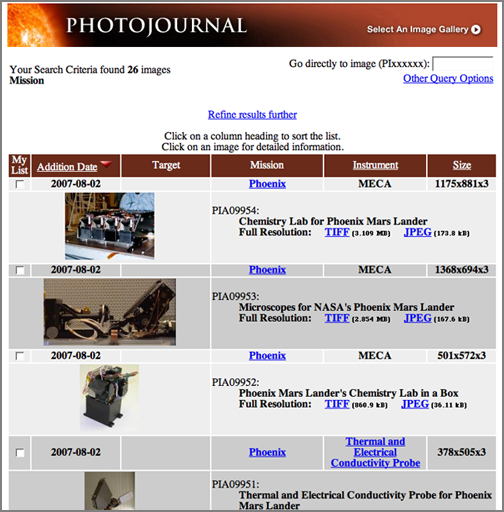
</div>
</div>

<div class="posted">
<br />Posted by <span class="item-creator">Kurt</span>
| <a class="link" href="2008-05.html#e2008-05-21T17_14_43.txt">Permalink</a>

<!-- <br /><a href="archives/2008-05-21T17_29_05.html#comments">Comments</a> -->
</div>
</div>
<div class="item">
<a id="e2008-05-21T10_07_43.txt" name="e2008-05-21T10_07_43.txt"></a>
<h2 class="date">05.21.2008 10:07</h2>
<div class="blogbody">
<h3 class="title">Why OpenStreetMap?</h3>
<div class="item-description">
I didn't say why I think <a
href="http://wiki.openstreetmap.org/index.php/Main_Page">OpenStreetMap</a>
(OSM) is good for ERMA.  The main improvement in using OSM over Google
is in the flexibility.  Small towns use roads and trails that are not
in Google.  In the event of an emergency, roads may be impassible
and/or quickly added.  Small trails for ATV access may be important to
document.  With a GPS and OpenStreetMap, the local community or
emergency responders can add and edit changes in roads and trails
quickly.  Even if OSM is yet very good in a locality, it can quickly
be updated to be as good as Google Maps.  An example of this is
St. Lawrence Island.  The critical ATV trails to access the eastern
end of the island are not on Google Maps.
<br /><br />
<a href="http://maps.google.com/?ie=UTF8&ll=63.68989,-170.459576&spn=0.043445,0.116558&z=13&lci=lmc:panoramio,lmc:wikipedia_en">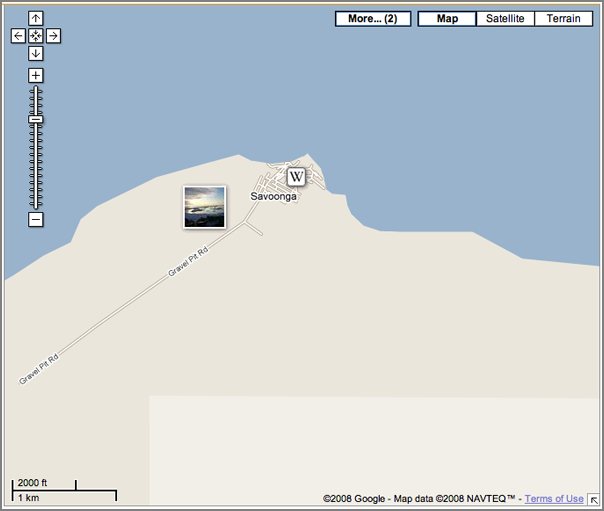</a>
<br /><br />
However, the local community has yet to try out OSM.  And there is a
weird rendering bug for the island.  Hopefully both of these will be fixed
in the near future.
<br /><br />
<a href="http://www.openstreetmap.org/?lat=63.72&lon=-168.93&zoom=6&layers=B0FT">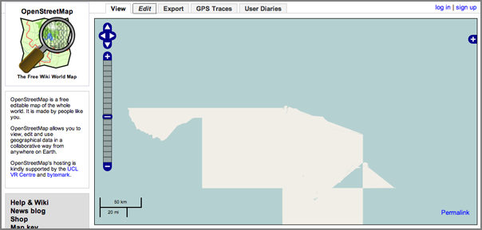</a>
<br /><br />
As seen below, OSM can have very detailed maps of an area.
<br /><br />
<a href="http://www.openstreetmap.org/?lat=43.0787&lon=-70.75632&zoom=15&layers=B0FT">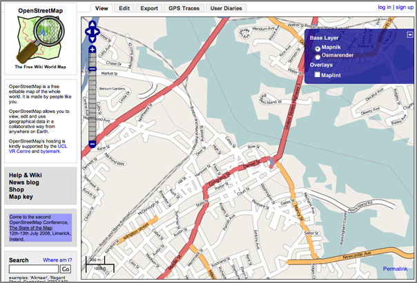</a>
</div>
</div>

<div class="posted">
<br />Posted by <span class="item-creator">Kurt</span>
| <a class="link" href="2008-05.html#e2008-05-21T10_07_43.txt">Permalink</a>

<!-- <br /><a href="archives/2008-05-21T17_14_43.html#comments">Comments</a> -->
</div>
</div>
<div class="item">
<a id="e2008-05-21T09_09_27.txt" name="e2008-05-21T09_09_27.txt"></a>
<h2 class="date">05.21.2008 09:09</h2>
<div class="blogbody">
<h3 class="title">kml2gml XSLT stylesheet conversion</h3>
<div class="item-description">
Don't have time right now to play with this, but <a
href="http://spanring.eu/blog/2005/12/11/kml2gml/">Styling KML to
GML</a> [Christian Spanring] has a very small XSL file that converts
KML to GML.
</div>
</div>

<div class="posted">
<br />Posted by <span class="item-creator">Kurt</span>
| <a class="link" href="2008-05.html#e2008-05-21T09_09_27.txt">Permalink</a>

<!-- <br /><a href="archives/2008-05-21T10_07_43.html#comments">Comments</a> -->
</div>
</div>
<div class="item">
<a id="e2008-05-20T18_13_43.txt" name="e2008-05-20T18_13_43.txt"></a>
<h2 class="date">05.20.2008 18:13</h2>
<div class="blogbody">
<h3 class="title">ERMA gets Open Street Maps</h3>
<div class="item-description">
We were using Google Maps on ERMA, but Rob and company now have it
using Open Street Maps.  This is very exciting!  Now I just need to be
good and help out with the Open Street Map project by editing / adding
some street info.
<br /><br />
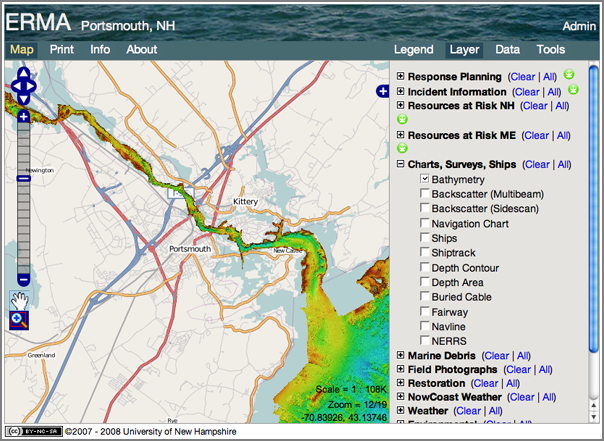
</div>
</div>

<div class="posted">
<br />Posted by <span class="item-creator">Kurt</span>
| <a class="link" href="2008-05.html#e2008-05-20T18_13_43.txt">Permalink</a>

<!-- <br /><a href="archives/2008-05-21T09_09_27.html#comments">Comments</a> -->
</div>
</div>
<div class="item">
<a id="e2008-05-20T17_50_21.txt" name="e2008-05-20T17_50_21.txt"></a>
<h2 class="date">05.20.2008 17:50</h2>
<div class="blogbody">
<h3 class="title">Phoenix in the press</h3>
<div class="item-description">
The press and blogs are starting to really notice the Phoenix Mars Lander:
<br /><br />
<a href="http://groklab.org/blog/2008/05/20/phoenix-mars-mission-home-3/">Phoenix Mars Mission - Home</a> [GROK Lab]
<br /><br />
<a href="http://www.azcentral.com/arizonarepublic/news/articles/0519mars0519.html">Mission leader anxiously awaits rendezvous with Mars</a> [The Arizona Republic]
<br /><br />
<a href="http://www.space.com/scienceastronomy/080520-st-mars-lander-science.html">obot to Dig Martian Arctic</a> [space.com]
<pre>...
A soft touchdown in Mars' northern arctic plains set for Sunday is
just the first step for NASA's Phoenix Mars Lander. If the dust
clears, solar-power arrays deploy and all equipment checks out,
Phoenix will then have some digging to do.
...</pre>
<br /><br />
<a href="http://ap.google.com/article/ALeqM5j1hvRUNc9W-3lupLU6TLQtR0gdRAD90OSVPO1">Robot digger set to land Sunday at Martian pole</a> [ AP Press ]
<br /><br />
<a href="http://www.tucsoncitizen.com/daily/local/85418.php">UA's Mars mission leader picked for new endowed chair</a> [ Tucson Citizen]
<br /><br />
An interview with Chris Shinohara: <a
href="http://www.azstarnet.com/metro/239610"></a>Countdown: 6 (Earth)
days 'til mars landing; Chris Shinohara, manager of the Science
Operations Center</a> [azstarnet]
</div>
</div>

<div class="posted">
<br />Posted by <span class="item-creator">Kurt</span>
| <a class="link" href="2008-05.html#e2008-05-20T17_50_21.txt">Permalink</a>

<!-- <br /><a href="archives/2008-05-20T18_13_43.html#comments">Comments</a> -->
</div>
</div>
<div class="item">
<a id="e2008-05-20T17_22_20.txt" name="e2008-05-20T17_22_20.txt"></a>
<h2 class="date">05.20.2008 17:22</h2>
<div class="blogbody">
<h3 class="title">HiBlog on Phoenix</h3>
<div class="item-description">
<a href=http://hirise.lpl.arizona.edu/HiBlog/?p=180">Phoenix support</a> [HiBlog]
<pre>It seems like we've been preparing for the Phoenix mission for such a
long time - and now it's finally close to landing day! T-6 days
according to our countdown clock! Things are getting pretty crazy
here, and I thought a little overview of how the HiRISE team is
supporting the Phoenix mission would be useful.
.
We've been imaging the northern plains for Phoenix since we started
our mission (here's a bunch of reconnaissance images on our
website). The first images we got back showed lots of scary boulders
(a close-up of one of our Transition images shown to the right), so we
sampled other areas and searched for a relatively boulder-free landing
spot. The area the Phoenix team finally chose is being called the
"Green Valley", not because of the "green light = safe to go"
connotation, but rather because some geological maps made of the area
happened to use green as the color for the valley. Perhaps
coincidentally, Green Valley is also a town near Tucson, where both
Phoenix and HiRISE are based. Whatever the reason, I like that the
name has a lovely calm, comforting feel.
...</pre>
A landing ellipse image from their website:
<br /><br />
<a href="http://hirise.lpl.arizona.edu/HiBlog/wp-content/uploads/2008/05/phoenix_ellipse_mosaicking.png">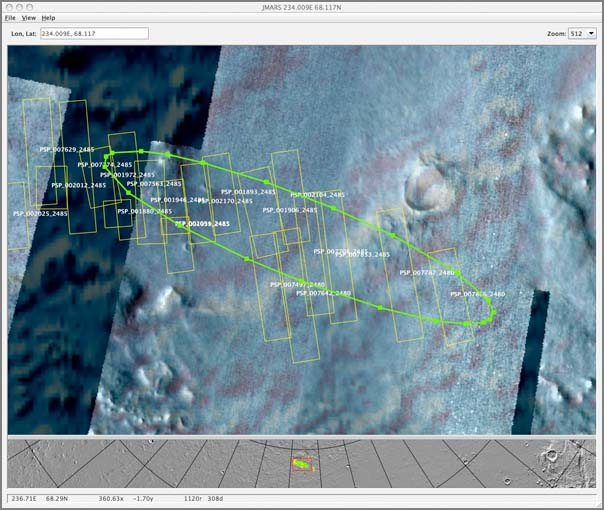</a>
</div>
</div>

<div class="posted">
<br />Posted by <span class="item-creator">Kurt</span>
| <a class="link" href="2008-05.html#e2008-05-20T17_22_20.txt">Permalink</a>

<!-- <br /><a href="archives/2008-05-20T17_50_21.html#comments">Comments</a> -->
</div>
</div>
<div class="item">
<a id="e2008-05-20T14_41_32.txt" name="e2008-05-20T14_41_32.txt"></a>
<h2 class="date">05.20.2008 14:41</h2>
<div class="blogbody">
<h3 class="title">GMT 3.4.1 in fink</h3>
<div class="item-description">
If you update fink for Mac OSX 10.4 or 10.5, you should get GMT 3.4.1.
Make sure to <b>fink remove gmt-dev</b> before building or you will
run into a link error.  Thanks to Remko et al. for the updated fink
files.  Happy mapping!
</div>
</div>

<div class="posted">
<br />Posted by <span class="item-creator">Kurt</span>
| <a class="link" href="2008-05.html#e2008-05-20T14_41_32.txt">Permalink</a>

<!-- <br /><a href="archives/2008-05-20T17_22_20.html#comments">Comments</a> -->
</div>
</div>
<div class="item">
<a id="e2008-05-20T14_37_39.txt" name="e2008-05-20T14_37_39.txt"></a>
<h2 class="date">05.20.2008 14:37</h2>
<div class="blogbody">
<h3 class="title">5 days till Phoenix lands on Mars</h3>
<div class="item-description">
<a href="http://phoenix.lpl.arizona.edu/">Phoenix</a> will land in
just about 5 days... this Sunday.  I won't be able to blog about
operations unless I run it through the press folks, so don't expect
anything specifically about the mission.  Yes, I'm at the Science
Operations Center, but that's it for now.
</div>
</div>

<div class="posted">
<br />Posted by <span class="item-creator">Kurt</span>
| <a class="link" href="2008-05.html#e2008-05-20T14_37_39.txt">Permalink</a>

<!-- <br /><a href="archives/2008-05-20T14_41_32.html#comments">Comments</a> -->
</div>
</div>
<div class="item">
<a id="e2008-05-20T08_46_42.txt" name="e2008-05-20T08_46_42.txt"></a>
<h2 class="date">05.20.2008 08:46</h2>
<div class="blogbody">
<h3 class="title">Louisville lock</h3>
<div class="item-description">
Last week, we got a shot from the air of the Louisville lock.  This is
an area that the Army Corps Of Engineers (ACOE) and the USCG is
looking to put an AIS system to help keep tugs and tows safe.  As this
image illustrates, the brown water community has a different set of
challenges than the blue water maritime community.
<br /><br />

</div>
</div>

<div class="posted">
<br />Posted by <span class="item-creator">Kurt</span>
| <a class="link" href="2008-05.html#e2008-05-20T08_46_42.txt">Permalink</a>

<!-- <br /><a href="archives/2008-05-20T14_37_39.html#comments">Comments</a> -->
</div>
</div>
<div class="item">
<a id="e2008-05-20T07_10_02.txt" name="e2008-05-20T07_10_02.txt"></a>
<h2 class="date">05.20.2008 07:10</h2>
<div class="blogbody">
<h3 class="title">Landing on Mars Sunday</h3>
<div class="item-description">
When you tell your neighbors that you are "landing on Mars next weekend," you get some strange looks.  <br />
This Sunday, Phoenix lands on Mars.
<br /><br />
<a href="http://www.boston.com/news/science/articles/2008/05/19/robot_digger_set_to_land_sunday_at_martian_pole/?rss_id=Boston.com+--+Science+news">Robot digger set to land Sunday at Martian pole</a> [boston.com]
<br /><br />
and
<br /><br />
<a href="http://www.boston.com/news/science/articles/2008/05/19/a_look_at_nasas_latest_mission_to_the_red_planet/?rss_id=Boston.com+--+Science+news">A look at NASA's latest mission to the red planet</a> [boston.com]
</div>
</div>

<div class="posted">
<br />Posted by <span class="item-creator">Kurt</span>
| <a class="link" href="2008-05.html#e2008-05-20T07_10_02.txt">Permalink</a>

<!-- <br /><a href="archives/2008-05-20T08_46_42.html#comments">Comments</a> -->
</div>
</div>
<div class="item">
<a id="e2008-05-17T15_47_47.txt" name="e2008-05-17T15_47_47.txt"></a>
<h2 class="date">05.17.2008 15:47</h2>
<div class="blogbody">
<h3 class="title">Gigapan on slashdot</h3>
<div class="item-description">
Randy Sargent's <a href="http://www.gigapan.org">gigapan</a> has made
slashdot...
<br /><br />
<a href="http://hardware.slashdot.org/article.pl?sid=08/05/17/176233">
Robotic Camera Extension Takes Gigapixel Photos</a>
<br /><br />
<a href="http://itnews.com.au/News/76243,boffins-take-gigapixel-photos-using-ordinary-camera.aspx">Boffins take gigapixel photos using ordinary camera</a> [itnews.com.au]
</div>
</div>

<div class="posted">
<br />Posted by <span class="item-creator">Kurt</span>
| <a class="link" href="2008-05.html#e2008-05-17T15_47_47.txt">Permalink</a>

<!-- <br /><a href="archives/2008-05-20T07_10_02.html#comments">Comments</a> -->
</div>
</div>
<div class="item">
<a id="e2008-05-17T15_28_17.txt" name="e2008-05-17T15_28_17.txt"></a>
<h2 class="date">05.17.2008 15:28</h2>
<div class="blogbody">
<h3 class="title">Stratigraphic slug models</h3>
<div class="item-description">
Before Phoenix lands on Mars, I'm cleaning up and reviewing some
papers.  I came back across two papers by Posamentier and Vail,
<em>Eustatic Controls on Clastic Deposition II - Sequence and System
Tract Models</em>, in Sea-Level changes - An Integrated Approach, SEPM
Special Pub No 42, 1988. Time to get the brain back into geologic
process mode.  We are landing in polygonal terrain, so this is not
likely to apply, but these are interesting geologic process concepts.
<br /><br />
Slug models...
<br /><br />
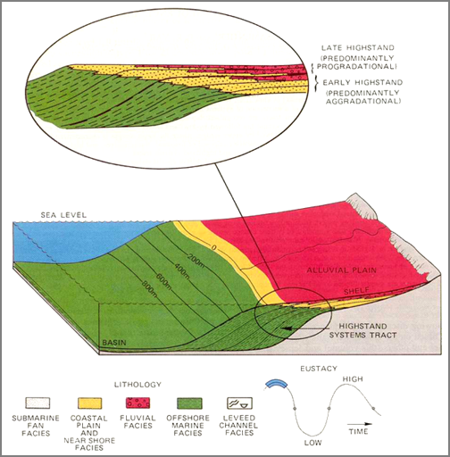
<br /><br />
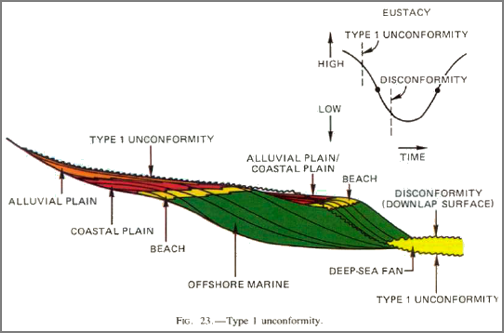
</div>
</div>

<div class="posted">
<br />Posted by <span class="item-creator">Kurt</span>
| <a class="link" href="2008-05.html#e2008-05-17T15_28_17.txt">Permalink</a>

<!-- <br /><a href="archives/2008-05-17T15_47_47.html#comments">Comments</a> -->
</div>
</div>
<div class="item">
<a id="e2008-05-16T07_01_21.txt" name="e2008-05-16T07_01_21.txt"></a>
<h2 class="date">05.16.2008 07:01</h2>
<div class="blogbody">
<h3 class="title">Adobe Flash leg up</h3>
<div class="item-description">
From <a href="http://www.realityprime.com/news/flash-aha-savior-of-the-univese">Flash - Aha - Savior of the Univese</a> [Reality Prime]
<br /><br />
<a href="http://blog.wired.com/monkeybites/2008/04/adobe-drops-lic.html">Adobe Drops Licensing Fees, Gives Away Flash For Devices</a>: <a href="http://www.adobe.com/openscreenproject/">Open Screen Project</a>
<pre>...
1. Adobe will remove license restrictions on SWF and FLV file
formats. Outsiders can now build their own Flash player clones.
.
2. Adobe will also remove the licensing fees on its Flash
player. Developers can now integrate Adobe's player into any device or
application without paying a fee.
...</pre>
<a href="http://labs.adobe.com/technologies/flashplayer10/">Flash Player 10 Public PreRelease</a>
<pre>3D Effects - Easily transform and animate any display object through
3D space while retaining full interactivity.  Fast, lightweight, and
native 3D effects make motion that was previously reserved for expert
users available to everyone.  Complex effects are simple with APIs
that extend what you already know.
</pre>
</div>
</div>

<div class="posted">
<br />Posted by <span class="item-creator">Kurt</span>
| <a class="link" href="2008-05.html#e2008-05-16T07_01_21.txt">Permalink</a>

<!-- <br /><a href="archives/2008-05-17T15_28_17.html#comments">Comments</a> -->
</div>
</div>
<div class="item">
<a id="e2008-05-15T17_22_25.txt" name="e2008-05-15T17_22_25.txt"></a>
<h2 class="date">05.15.2008 17:22</h2>
<div class="blogbody">
<h3 class="title">PORTS adds another location</h3>
<div class="item-description">
<a
href="http://www.noaanews.noaa.gov/stories2008/20080515_mariners.html">New
NOAA Ocean Observing System in Pascagoula Aids Mariners; Keeps
Shipping Safe</a> [noaanews]
<br /><br />
<pre>...
The Pascagoula system brings the number of PORTS(R) in operation
around the nation to 15. Estimates of economic benefits directly
attributed to PORTS® range from $7 million per year for Tampa Bay to
$16 million per year for Houston-Galveston.
...</pre>
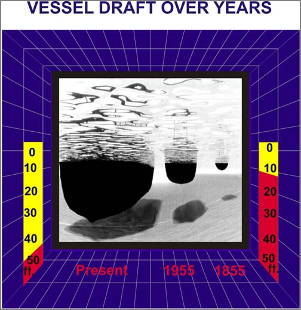
<br /><br />
Draft or Draught?
</div>
</div>

<div class="posted">
<br />Posted by <span class="item-creator">Kurt</span>
| <a class="link" href="2008-05.html#e2008-05-15T17_22_25.txt">Permalink</a>

<!-- <br /><a href="archives/2008-05-16T07_01_21.html#comments">Comments</a> -->
</div>
</div>
<div class="item">
<a id="e2008-05-15T15_43_34.txt" name="e2008-05-15T15_43_34.txt"></a>
<h2 class="date">05.15.2008 15:43</h2>
<div class="blogbody">
<h3 class="title">Where 2.0 day 3</h3>
<div class="item-description">
In the "I'm missing all the action" category: <a href="http://www.gearthblog.com/blog/archives/2008/05/where_20_2008_day_3_wednesday.html#more">Where 2.0 2008 - Day 3 - Wednesday</a> [Google Earth Blog]
<pre>Disaster Tech - Jesse Robbins, Mikel Maron - These guys mentioned how
Google Maps/Earth have been used in numerous disaster situations like
Hurricane Katrina and the California fires. They also spent some time
pointing out some issues in using traditional mapping
technologies. For example, Google Maps did not modify the routing
around a bridge that was destroyed in New Orleans during the
hurricane. It wasn't until the media wrote some stories about this
problem many months after the disaster that Google managed to fix
it. Jesse and Mikel of course pointed to Open Street Map's technology
which enables anyone to suggest/make edits to the maps as one possible
path. Although they recognized that relying on crowd-source derived
maps only may not be the best course by emergency professionals in a
large human disaster. They also pointed out that even if the data were
updated, the Red Cross and other organizations may not have the time
during the disaster to check the right sources with the updated data.</pre>
</div>
</div>

<div class="posted">
<br />Posted by <span class="item-creator">Kurt</span>
| <a class="link" href="2008-05.html#e2008-05-15T15_43_34.txt">Permalink</a>

<!-- <br /><a href="archives/2008-05-15T17_22_25.html#comments">Comments</a> -->
</div>
</div>
<div class="item">
<a id="e2008-05-15T15_36_31.txt" name="e2008-05-15T15_36_31.txt"></a>
<h2 class="date">05.15.2008 15:36</h2>
<div class="blogbody">
<h3 class="title">CCOM link on the ListenForWhales.org</h3>
<div class="item-description">
The <a href=http://listenforwhales.org/">ListenForWhales</a> now has CCOM on the Partnerships <a href="http://listenforwhales.org/NetCommunity/Page.aspx?pid=452&srcid=430">overview</a> page.
<br /><br />
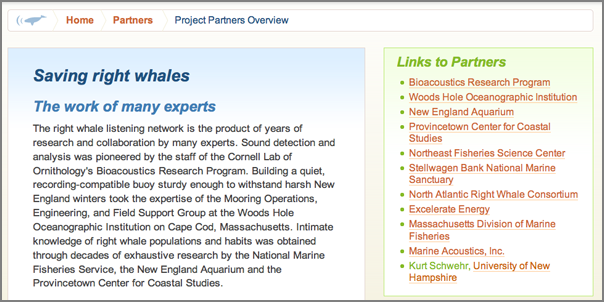
</div>
</div>

<div class="posted">
<br />Posted by <span class="item-creator">Kurt</span>
| <a class="link" href="2008-05.html#e2008-05-15T15_36_31.txt">Permalink</a>

<!-- <br /><a href="archives/2008-05-15T15_43_34.html#comments">Comments</a> -->
</div>
</div>
<div class="item">
<a id="e2008-05-14T18_05_47.txt" name="e2008-05-14T18_05_47.txt"></a>
<h2 class="date">05.14.2008 18:05</h2>
<div class="blogbody">
<h3 class="title">GeoEndNote - EndNote to Google Earth conversion</h3>
<div class="item-description">
At the <a href="http://gebco.net/">GEBCO</a> meeting this month (May
26-30) in Japan, we are presenting a poster.  I won't be able to go,
but if you are there, make sure to come talk a look and talk to 
the people manning the poster.
<br /><br />
Monahan, Schwehr, Wigley, Tinmouth, Goncalves, Jinidasa, Uddin, Ito,
"<em>GEBCO Visual Library, Proof of Concept</em>"
<br /><br />
The concept it to create a field in EndNote that is used to enter <a
href="http://en.wikipedia.org/wiki/Well-known_text">WKT</a> geometry
for each figure of a reference that has a geospatial component.  There
are lots more features and presentation styles that we are looking at,
but this is our first pass.  Expect a more detailed blog post and
sample code in a couple weeks.
<br /><br />
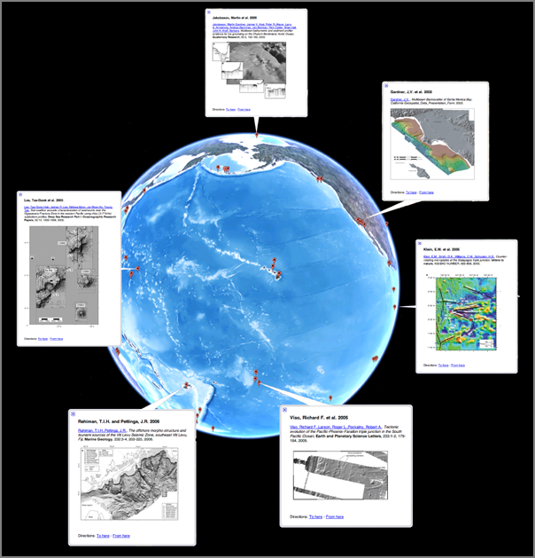
</div>
</div>

<div class="posted">
<br />Posted by <span class="item-creator">Kurt</span>
| <a class="link" href="2008-05.html#e2008-05-14T18_05_47.txt">Permalink</a>

<!-- <br /><a href="archives/2008-05-15T15_36_31.html#comments">Comments</a> -->
</div>
</div>
<div class="item">
<a id="e2008-05-14T16_31_37.txt" name="e2008-05-14T16_31_37.txt"></a>
<h2 class="date">05.14.2008 16:31</h2>
<div class="blogbody">
<h3 class="title">Robo jelly fish and artificial icebergs for polar bears et al.</h3>
<div class="item-description">
Last weekend, I was thinking that we need to start thinking about
artifically icebergs for polar bears and other arctic animals that
depend on sea ice habitat.  It would be kind of like sinking old ships
to make a reef environment.
<br /><br />
Then Phil pointed me to robo-jellies:
<br /><br />
<a href="http://blogs.zdnet.com/emergingtech/?p=901">Two robotic jellyfish, AquaJelly and AirJelly</a> [zdnet ermerging tech]
<pre>... AquaJelly and AirJelly, made by Germany-based Festo company, are using
8 tentacles based on fish fins for propulsion. The AquaJelly has 11
infrared light-emitting diodes and communicates with a central station
by using the short-range radio standard ZigBee. ...</pre>
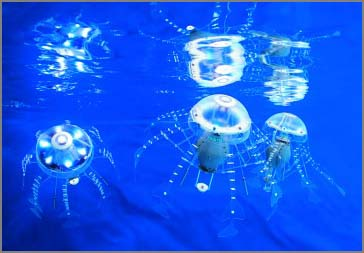
<br /><br />
<a href="http://www.youtube.com/watch?v=q_PIj5qbQ2Q">youtube video</a>
<br /><br />
<object width="425" height="355"><param name="movie" value="http://www.youtube.com/v/q_PIj5qbQ2Q&hl=en"></param><param name="wmode" value="transparent"></param><embed src="http://www.youtube.com/v/q_PIj5qbQ2Q&hl=en" type="application/x-shockwave-flash" wmode="transparent" width="425" height="355"></embed></object>
</div>
</div>

<div class="posted">
<br />Posted by <span class="item-creator">Kurt</span>
| <a class="link" href="2008-05.html#e2008-05-14T16_31_37.txt">Permalink</a>

<!-- <br /><a href="archives/2008-05-14T18_05_47.html#comments">Comments</a> -->
</div>
</div>
<div class="item">
<a id="e2008-05-14T07_58_04.txt" name="e2008-05-14T07_58_04.txt"></a>
<h2 class="date">05.14.2008 07:58</h2>
<div class="blogbody">
<h3 class="title">Phoenix Mission Ready for Mars Landing</h3>
<div class="item-description">
<a href="http://www.jpl.nasa.gov/news/news.cfm?release=2008-074">NASA Phoenix Mission Ready For Mars Landing</a> [JPL]
<br /><br />
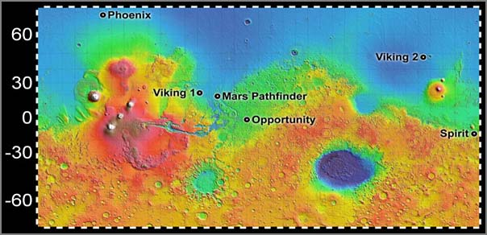
<br /><br />
<pre>...
 "The Phoenix mission not only studies the northern permafrost region,
 but takes the next step in Mars exploration by determining whether
 this region, which may encompass as much as 25 percent of the Martian
 surface, is habitable," said Peter Smith, Phoenix principal
 investigator at the University of Arizona, Tucson.
...</pre>
</div>
</div>

<div class="posted">
<br />Posted by <span class="item-creator">Kurt</span>
| <a class="link" href="2008-05.html#e2008-05-14T07_58_04.txt">Permalink</a>

<!-- <br /><a href="archives/2008-05-14T16_31_37.html#comments">Comments</a> -->
</div>
</div>
<div class="item">
<a id="e2008-05-13T23_01_03.txt" name="e2008-05-13T23_01_03.txt"></a>
<h2 class="date">05.13.2008 23:01</h2>
<div class="blogbody">
<h3 class="title">Where 2.0</h3>
<div class="item-description">
<a href="http://www.gearthblog.com/blog/archives/2008/05/where_20_day_1.html">Where 2.0 - Day 1</a> [Google Earth Blog]
</div>
</div>

<div class="posted">
<br />Posted by <span class="item-creator">Kurt</span>
| <a class="link" href="2008-05.html#e2008-05-13T23_01_03.txt">Permalink</a>

<!-- <br /><a href="archives/2008-05-14T07_58_04.html#comments">Comments</a> -->
</div>
</div>
<div class="item">
<a id="e2008-05-13T14_01_24.txt" name="e2008-05-13T14_01_24.txt"></a>
<h2 class="date">05.13.2008 14:01</h2>
<div class="blogbody">
<h3 class="title">MIT Tech Review on Right Whale system</h3>
<div class="item-description">
<a href="http://www.technologyreview.com/Infotech/20736/">Stopping
Ship-Whale Collisions - A detection system picks up the calls of right
whales and warns ships.</a>
<pre>...
Within the past three years, at least two North Atlantic right whales
have been killed by ships in the area, says Leila Hatch, regional
marine bioacoustic coordinator for the sanctuary. "This is in a
population where we cannot lose one," she adds.
...</pre>
and
<a href="http://www.lnglawblog.com/BlogEntry.aspx?_entry=28bfdb6f-78a5-4d07-ab40-0077b2725f03">Excelerate Expected to Deliver Initial Cargo to Northeast Gateway this Week</a>
<pre>According to Platts LNG Daily, shipping records suggest that
Excelerate Energy's LNG carrier Excellence will deliver a 1 Bcf cargo
of LNG to the Northeast Gateway LNG deepwater port on Thursday.
</pre>
</div>
</div>

<div class="posted">
<br />Posted by <span class="item-creator">Kurt</span>
| <a class="link" href="2008-05.html#e2008-05-13T14_01_24.txt">Permalink</a>

<!-- <br /><a href="archives/2008-05-13T23_01_03.html#comments">Comments</a> -->
</div>
</div>
<div class="item">
<a id="e2008-05-13T11_18_26.txt" name="e2008-05-13T11_18_26.txt"></a>
<h2 class="date">05.13.2008 11:18</h2>
<div class="blogbody">
<h3 class="title">NOAA Draft Management Plan for SBNMS</h3>
<div class="item-description">
<a
href="http://www.noaanews.noaa.gov/stories2008/20080506_stellwagen.html">Draft
Management Plan for NOAA's Stellwagen Bank National Marine Sanctuary
Released for Public Review and Comment</a> [NOAA]
<pre>NOAA today released a comprehensive draft management plan and
environmental assessment for Stellwagen Bank National Marine Sanctuary
for public review and comment. Based on several years of scientific
study and extensive public input, the plan recommends specific actions
to address issues impacting the sanctuary.
.
"The draft management plan is the result of a collaborative effort
that includes thousands of people and the hard work of sanctuary staff
and the sanctuary's advisory council," said Daniel J. Basta, director
of the NOAA Office of National Marine Sanctuaries. "We welcome further
public review and comment as we go forward with the important job of
managing this special undersea place for future generations to enjoy."
...
</pre>
<a href="http://stellwagen.noaa.gov/management/mpr/draftplan.html">SBNMS Draft Management Plan</a>
</div>
</div>

<div class="posted">
<br />Posted by <span class="item-creator">Kurt</span>
| <a class="link" href="2008-05.html#e2008-05-13T11_18_26.txt">Permalink</a>

<!-- <br /><a href="archives/2008-05-13T14_01_24.html#comments">Comments</a> -->
</div>
</div>
<div class="item">
<a id="e2008-05-13T08_58_11.txt" name="e2008-05-13T08_58_11.txt"></a>
<h2 class="date">05.13.2008 08:58</h2>
<div class="blogbody">
<h3 class="title">django databrowse</h3>
<div class="item-description">
<br /><br />
This is my first try at using Django's <a
href="http://www.djangoproject.com/documentation/databrowse/">databrowse</a>
system.  First I modified my settings.py to add
"<b>'django.contrib.databrowse',</b>" to the INSTALLED_APPS.
Then I had to register the classes with databrowse and give it a URL.
<pre>from django.contrib import databrowse
import ais_www.ais_msgs as ais_msgs
import ais_www.define_ais as define_ais
#
databrowse.site.register(ais_msgs.models.Position)
databrowse.site.register(ais_msgs.models.Shipdata)
databrowse.site.register(define_ais.models.Aismsg)
databrowse.site.register(define_ais.models.Field)
#
urlpatterns += patterns ('',
                        (r'^databrowse/(.*)', databrowse.site.root),
                        )</pre>
Then I was able to open and test databrowse.
<br /><br />
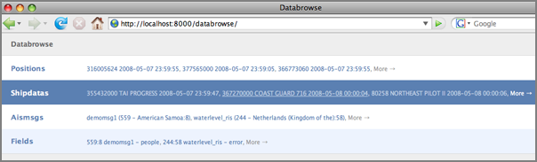
<br /><br />
I had to slightly tweak the shipdata class to show the names without
the '<b>@</b>' end of string pad characters that AIS uses.
<pre>class Shipdata(models.Model):
    def __str__(self):
        return str(self.userid) + ' ' + self.name.strip('@') + ' ' + str(self.cg_timestamp)</pre>
<br /><br />
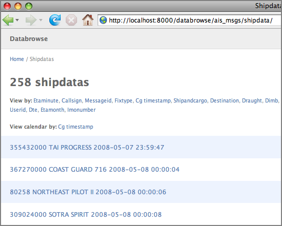
<br /><br />
And an individual entry:
<br /><br />
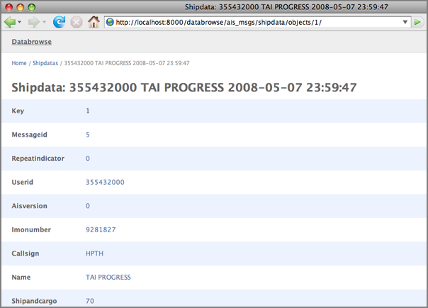
<br /><br />
That was fairly easy and now I don't have to use the Admin application
to view data.
</div>
</div>

<div class="posted">
<br />Posted by <span class="item-creator">Kurt</span>
| <a class="link" href="2008-05.html#e2008-05-13T08_58_11.txt">Permalink</a>

<!-- <br /><a href="archives/2008-05-13T11_18_26.html#comments">Comments</a> -->
</div>
</div>
<div class="item">
<a id="e2008-05-12T23_02_10.txt" name="e2008-05-12T23_02_10.txt"></a>
<h2 class="date">05.12.2008 23:02</h2>
<div class="blogbody">
<h3 class="title">Tuesday morning UNH coring presentations</h3>
<div class="item-description">
I won't get to see this, but for those who will be on campus at UNH, this
sounds exciting!
<pre>
Hi all,
.
We are having a mini-poster session tomorrow morning (Tuesday) at 9:30
AM in James Hall 119.  Students in my Sedimentology course (Esci
754/854) are presenting a poster based on our coring cruise in Little
Bay and Great Bay and the students in Will Clyde's new Advanced
Paleobiology course are presenting their term research posters. Please
feel free to come by anytime between 9:30 and 11:30 to check them out.
.
Joel Johnson
</pre>
</div>
</div>

<div class="posted">
<br />Posted by <span class="item-creator">Kurt</span>
| <a class="link" href="2008-05.html#e2008-05-12T23_02_10.txt">Permalink</a>

<!-- <br /><a href="archives/2008-05-13T08_58_11.html#comments">Comments</a> -->
</div>
</div>
<div class="item">
<a id="e2008-05-12T15_05_19.txt" name="e2008-05-12T15_05_19.txt"></a>
<h2 class="date">05.12.2008 15:05</h2>
<div class="blogbody">
<h3 class="title">What happened out at the Isle of Shoals?</h3>
<div class="item-description">
<a href="http://www.fosters.com/apps/pbcs.dll/article?AID=/20080512/GJNEWS_01/38611296/">Coast Guard searches for missing lobsterman</a>
<pre>
PORTSMOUTH - Coast Guard officials are searching for one of three crew
members aboard a 44-foot lobster boat believed to have capsized near
the Isles of Shoals this morning.
...
Following tips from another boat in the vicinity of the Isles of
Shoals, crews were able to determine that the boat carrying the three
passengers had capsized.
.
According to Terrell, the boat is believed to be out of Kittery, Maine
and is called the "Sav-A-Buck."
.
Once on scene, Coast Guard crews were able to rescue two crew
members...
</pre>
</div>
</div>

<div class="posted">
<br />Posted by <span class="item-creator">Kurt</span>
| <a class="link" href="2008-05.html#e2008-05-12T15_05_19.txt">Permalink</a>

<!-- <br /><a href="archives/2008-05-12T23_02_10.html#comments">Comments</a> -->
</div>
</div>
<div class="item">
<a id="e2008-05-12T11_05_04.txt" name="e2008-05-12T11_05_04.txt"></a>
<h2 class="date">05.12.2008 11:05</h2>
<div class="blogbody">
<h3 class="title">EPA GIS Workgroup and Where 2.0</h3>
<div class="item-description">
Two events that I hope people will post extensively about:
<br /><br />
<a href="http://surveying-mapping-gis.blogspot.com/2008/05/epa-gis-workgroup.html">EPA GIS Workgroup</a> [Surveying Mapping and GIS blog]
<br /><br />
and
<br /><br />
<a href="http://en.oreilly.com/where2008/public/content/home">Where 2.0 2008</a> [O'Reilly]
</div>
</div>

<div class="posted">
<br />Posted by <span class="item-creator">Kurt</span>
| <a class="link" href="2008-05.html#e2008-05-12T11_05_04.txt">Permalink</a>

<!-- <br /><a href="archives/2008-05-12T15_05_19.html#comments">Comments</a> -->
</div>
</div>
<div class="item">
<a id="e2008-05-11T22_47_55.txt" name="e2008-05-11T22_47_55.txt"></a>
<h2 class="date">05.11.2008 22:47</h2>
<div class="blogbody">
<h3 class="title">Wink's Sporting Traps</h3>
<div class="item-description">
Now for something completely different.
<br /><br />
It's fun to see what some of my colleges do when they are not in
meetings with me.  Target shooting was something I really enjoyed 
way back when.  I've only done clay pigeons a couple of times.
<br /><br />
<a href="http://www.sportingtraps.com/">Wink's Sporting Traps</a>
<br /><br />
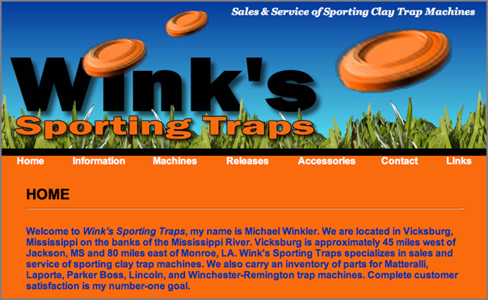
</div>
</div>

<div class="posted">
<br />Posted by <span class="item-creator">Kurt</span>
| <a class="link" href="2008-05.html#e2008-05-11T22_47_55.txt">Permalink</a>

<!-- <br /><a href="archives/2008-05-12T11_05_04.html#comments">Comments</a> -->
</div>
</div>
<div class="item">
<a id="e2008-05-11T16_25_24.txt" name="e2008-05-11T16_25_24.txt"></a>
<h2 class="date">05.11.2008 16:25</h2>
<div class="blogbody">
<h3 class="title">Right whale protection rule put on hold </h3>
<div class="item-description">
<br /><br />
<a
href="http://www.seacoastonline.com/apps/pbcs.dll/article?AID=/20080511/NEWS/80511008/">Whale
protection rule affecting cargo ships is put on hold</a> [seacoast online]
<pre>PORTLAND, Maine - A plan to force cargo ships to slow down while
traveling in waters frequented by endangered North Atlantic right
whales has been put on hold by the Bush administration.
.
The Office of Management and Budget is challenging the conclusions of
the plan drafted by federal scientists, according to documents
released by the Union of Concerned Scientists and Rep. Henry Waxman,
D-Calif., the Maine Sunday Telegram reported.
.
Lobster fishermen who will have to spend millions of dollars to buy
"whale safe" gear to comply with new federal rules are upset at the
prospect that the shipping industry will avoid regulation.
.
Lobstermen say ship strikes cause more whale deaths than fishing gear
does and it would be unfair if they have to comply with costly
restrictions while shipping companies get a bye.
.
"Any mortality to any individual whale hurts us all," said Patrice
McCarron, executive director of the Maine Lobstermen's
Association. "It's not a good way to protect a species. You need to be
exploring all the risk and not letting a big piece off the hook."
...
</pre>and
<br /><br />
<a
href="http://pressherald.mainetoday.com/story.php?id=186958&ac=PHnws">Are
lobstermen bearing the burden of whale protection while cargo ships
get a bye?</a>
<pre>...
The White House budget office is supposed to examine whether NOAA
scientists correctly analyzed the economic impact of the rule, said
Vicki Cornish, vice president of marine wildlife conservation for the
Ocean Conservancy, a marine conservation organization.
.
Instead, the office is now looking at whether the economic cost of the
rule is worth the conservation benefits of saving the right whale, she
said.
.
Scientists who have worked on the issue are angry, said Amy Knowlton,
a senior research scientist with the New England Aquarium Right Whale
Project.
...</pre>
</div>
</div>

<div class="posted">
<br />Posted by <span class="item-creator">Kurt</span>
| <a class="link" href="2008-05.html#e2008-05-11T16_25_24.txt">Permalink</a>

<!-- <br /><a href="archives/2008-05-11T22_47_55.html#comments">Comments</a> -->
</div>
</div>
<div class="item">
<a id="e2008-05-10T12_35_02.txt" name="e2008-05-10T12_35_02.txt"></a>
<h2 class="date">05.10.2008 12:35</h2>
<div class="blogbody">
<h3 class="title">Wikipedia biography page for Peter Smith</h3>
<div class="item-description">
I've just created a wikipedia biography page for <a
href="http://en.wikipedia.org/wiki/Peter_H_Smith">Peter H. Smith</a>
based on the text from <a
href="http://phoenix.lpl.arizona.edu/smithPeter.php">Peter Smith</a>
[LPL].  I've used the text with permission from the author, but it was
need to see how fast a wikipedia bot picked up the new wikipedia page
as being derived from an existing web site.  There definitely needs to
be some improvements done to the page, but this should get things
started.
<br /><br />
Peter is the Principle Investigator for the <a href="http://en.wikipedia.org/wiki/Phoenix_%28spacecraft%29">Phoenix Mars Lander</a>
<br /><br />
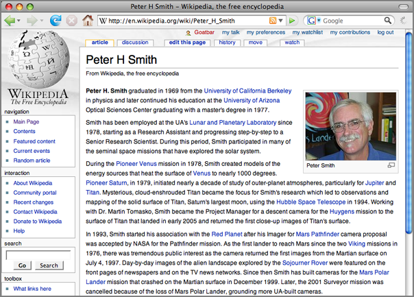
</div>
</div>

<div class="posted">
<br />Posted by <span class="item-creator">Kurt</span>
| <a class="link" href="2008-05.html#e2008-05-10T12_35_02.txt">Permalink</a>

<!-- <br /><a href="archives/2008-05-11T16_25_24.html#comments">Comments</a> -->
</div>
</div>
<div class="item">
<a id="e2008-05-09T08_07_18.txt" name="e2008-05-09T08_07_18.txt"></a>
<h2 class="date">05.09.2008 08:07</h2>
<div class="blogbody">
<h3 class="title">Right Whale project makes CNN Technology</h3>
<div class="item-description">
<a href="http://www.cnn.com/2008/TECH/05/08/whales.listen.ap/index.html"> Device lets ships hear whale chatter, avoid strikes</a>
<br /><br />
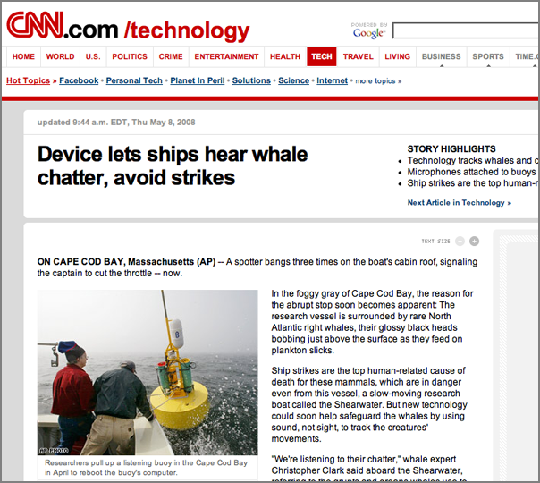
</div>
</div>

<div class="posted">
<br />Posted by <span class="item-creator">Kurt</span>
| <a class="link" href="2008-05.html#e2008-05-09T08_07_18.txt">Permalink</a>

<!-- <br /><a href="archives/2008-05-10T12_35_02.html#comments">Comments</a> -->
</div>
</div>
<div class="item">
<a id="e2008-05-07T09_09_02.txt" name="e2008-05-07T09_09_02.txt"></a>
<h2 class="date">05.07.2008 09:09</h2>
<div class="blogbody">
<h3 class="title">Interspill conference call for papers</h3>
<div class="item-description">
From OceanBuzz: <a href="http://www.interspill.com/papers">http://www.interspill.com/papers</a>
<pre>
2.a) INTERSPILL 2009 CALL FOR PAPERS, 12-14 MAY 2009, MARSEILLE,
FRANCE The Interspill 2009 International Conference and Exhibition for
Spill Prevention, Preparedness and Response, and the International
Maritime Organization 4th R&D Forum will be held in Marseille, France
from 12 to 14 May 2009, with the theme "Working Together".  The call
for papers for both events is now available online at
www.interspill.com/papers <http://www.interspill.com/papers>
.
The 5th Interspill event is expected to attract over 1000 delegates
and visitors from more than 70 countries.  International regulators,
oil industry operators and the spill response industry amongst others
will convene to discuss the risks, past and current and the latest
thinking in dealing with spill prevention, preparedness, response and
restoration.
.
Risk of oil spills remains ever present.  The oil and shipping
industries, governments and the public collectively share a
responsibility to protect our environment.  To do this, there is a
need for everyone to "Work Together" which will feature as the main
theme for the conference.  With the idea of cooperation in mind,
Interspill 2009 is delighted to host the 4th International Maritime
Organization R&D Forum on Hazardous & Noxious Substances (HNS) in the
Marine Environment.  The 4th IMO R&D Forum will focus on "hazardous
and noxious substances (HNS) in the marine environment" and will be
held nearly two years to the day after the entry into force of the
OPRC-HNS protocol. This Protocol was adopted to expand the scope of
the 1990 International Convention on Oil Pollution Preparedness,
Response and Co-operation (OPRC Convention 1990) and covers pollution
incidents from HNS.  It aims to provide a global framework for
international co-operation in combating major pollution incidents
involving HNS or threats by such substances to the marine environment
or coastline which would require emergency action or an immediate
response.
.
The Forum will address the main aspects of preparedness for and
response to HNS spills with topics that range from impact assessment,
to the operational dimension of pollution combating techniques and
equipment, as well as on health and safety and international
legislative issues.  This international meeting provides an
opportunity for direct communication amongst senior researchers and
research and development managers from recognised institutions around
the world to identify priority issues, more productive research, and
to promote co-operative joint research projects.
.
Authors who wish to contribute to the Interspill conference or to the
IMO R&D forum can submit their abstract online at
www.interspill.com/papers <http://www.interspill.com/papers> before
15th September 2008. Abstracts will be reviewed by the committee
before 15th November 2008.  Selected authors will be required to
submit final copies of their papers by 15th February 2008. A poster
session will also be organized. All topics and technical details may
be found at www.interspill.com <http://www.interspill.com> .  For
further information contact the team at info@interspill.com
<mailto:info@interspill.com> or call +44 (0) 1453 839228.
</pre>
</div>
</div>

<div class="posted">
<br />Posted by <span class="item-creator">Kurt</span>
| <a class="link" href="2008-05.html#e2008-05-07T09_09_02.txt">Permalink</a>

<!-- <br /><a href="archives/2008-05-09T08_07_18.html#comments">Comments</a> -->
</div>
</div>
<div class="item">
<a id="e2008-05-06T07_53_03.txt" name="e2008-05-06T07_53_03.txt"></a>
<h2 class="date">05.06.2008 07:53</h2>
<div class="blogbody">
<h3 class="title">NASA @ Home and City</h3>
<div class="item-description">
Nice graphics.  Got this via <a href="http://veryspatial.com/?p=2110">NASA is Everywhere!</a> [veryspatial]
<br /><br />
<a href="http://www.nasa.gov/externalflash/nasacity/landing.htm">NASA @ Home and City</a>
<br /><br />
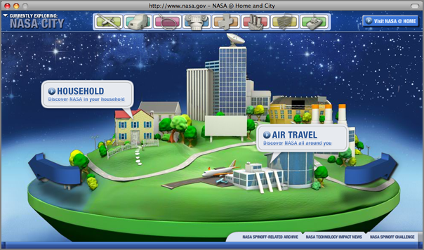
</div>
</div>

<div class="posted">
<br />Posted by <span class="item-creator">Kurt</span>
| <a class="link" href="2008-05.html#e2008-05-06T07_53_03.txt">Permalink</a>

<!-- <br /><a href="archives/2008-05-07T09_09_02.html#comments">Comments</a> -->
</div>
</div>
<div class="item">
<a id="e2008-05-06T07_23_07.txt" name="e2008-05-06T07_23_07.txt"></a>
<h2 class="date">05.06.2008 07:23</h2>
<div class="blogbody">
<h3 class="title">Magnetic fabrics from shearing glacial till</h3>
<div class="item-description">
Just noticed the first citation listed in the Web Of Science for my
2006 magnetic fabric paper: <a
href="http://www3.interscience.wiley.com.libproxy.unh.edu/journal/117943380/abstract">Iverson
et al. 2008</a> in Earth Surface Processes and Landforms.
<br /><br />
<pre><b>The experimental basis for interpreting particle and magnetic
fabrics of sheared till</b>
Particle fabrics of basal tills may allow testing of the
bed-deformation model of glacier flow, which requires high bed shear
strains (>100). Field studies, however, have not yielded a systematic
relationship between shear-strain magnitude and fabric development. To
isolate this relationship four basal tills and viscous putty were
sheared in a ring-shear device to strains as high as 714. Fabric was
characterized within a zone of shear deformation using the long-axis
orientations of fine-gravel and sand particles and the anisotropy of
magnetic susceptibility (AMS) of small (similar to 5-8 cm(3)) intact
samples. Results indicate that till particles rotate toward the plane
of shearing with long-axis orientations that become tightly clustered
in the direction of shear (0.78 < S-1 < 0.94 for three-dimensional
data). These strong, steady-state fabrics are attained at shear
strains of 7-30, with no evidence of fabric weakening with further
strain, regardless of the specific till or particle-size fraction
under consideration. These results do not support the Jeffery model of
particle rotation, which correctly describes particle rotation in the
viscous putty but not in the tills, owing to fluid-mechanical
assumptions of the model that are violated in till. The sensitivity of
fabric development to shear-strain magnitude indicates that, for most
till units where shear-strain magnitude is poorly known, attributing
fabric variations to spatial differences in other variables, such as
till thickness or water content, will be inherently
speculative. Attributing fabric characteristics to particular basal
till facies is uncertain because shear-strain magnitude is unlikely to
be closely correlated to till facies. Weak or spatially variable
fabrics, in the absence of post-depositional disturbance or major
deviations from unidirectional simple shear, indicate that till has
not been pervasively sheared to the high strains required by the
bed-deformation model. Strong How-parallel fabrics are a necessary but
insufficient criterion for confirming the model.
</pre>
</div>
</div>

<div class="posted">
<br />Posted by <span class="item-creator">Kurt</span>
| <a class="link" href="2008-05.html#e2008-05-06T07_23_07.txt">Permalink</a>

<!-- <br /><a href="archives/2008-05-06T07_53_03.html#comments">Comments</a> -->
</div>
</div>
<div class="item">
<a id="e2008-05-06T05_58_43.txt" name="e2008-05-06T05_58_43.txt"></a>
<h2 class="date">05.06.2008 05:58</h2>
<div class="blogbody">
<h3 class="title">HDLC in AIS - OSI Layer 2</h3>
<div class="item-description">
Yesterday, I was talking though the lower level transport mechanisms
of AIS with a guy from a chip manufacturer.  I'd never really looked 
at the lower levels before.
<pre>3.2.2 Data transfer 
.
Data transfer should use a bit-oriented protocol which is based on the
high-level data link control (HDLC) as specified by ISO/IEC 3309: 1993
Definition of packet structure. Information packets (I-Packets) should
be used with the exception that the control field is omitted (see
Fig. 6).
</pre>
There is a nice figure in the <a
href="http://en.wikipedia.org/wiki/High-Level_Data_Link_Control">Wikipedia
HDLC page</a> that shows HDLC in layer 2.
</div>
</div>

<div class="posted">
<br />Posted by <span class="item-creator">Kurt</span>
| <a class="link" href="2008-05.html#e2008-05-06T05_58_43.txt">Permalink</a>

<!-- <br /><a href="archives/2008-05-06T07_23_07.html#comments">Comments</a> -->
</div>
</div>
<div class="item">
<a id="e2008-05-05T10_56_23.txt" name="e2008-05-05T10_56_23.txt"></a>
<h2 class="date">05.05.2008 10:56</h2>
<div class="blogbody">
<h3 class="title">Jorge Arroyo on the Federal Rulemaking Process</h3>
<div class="item-description">
Jorge Arroy is talking about two new websites that cover rule making.
<pre>U.S. Coast Guard Regulatory initiatives, including Automatic
Identification Systems, Advance Notice of Arrival and Electronic
Charts, and Long Range Identification and Tracking (LRIT)</pre>
<a href="http://www.reginfo.gov/">www.reginfo.gov</a>
<br /><br />

<br /><br />
<a href="http://www.regulations.gov/">www.regulations.gov</a>
<br /><br />

</div>
</div>

<div class="posted">
<br />Posted by <span class="item-creator">Kurt</span>
| <a class="link" href="2008-05.html#e2008-05-05T10_56_23.txt">Permalink</a>

<!-- <br /><a href="archives/2008-05-06T05_58_43.html#comments">Comments</a> -->
</div>
</div>
<div class="item">
<a id="e2008-05-05T09_18_47.txt" name="e2008-05-05T09_18_47.txt"></a>
<h2 class="date">05.05.2008 09:18</h2>
<div class="blogbody">
<h3 class="title">RTCM meeting in San Diego</h3>
<div class="item-description">
This week, I'm at the RTCM meeting in San Diego.  If you are at the
meeting and read this blog, please come up and talk to me.
<br /><br />
The first talk is <em>An Overview of Deepwater Communications and
Information Systems</em> by RDML David Glenn. Interesting material
about combining SIPRNET and AIS on HC144 aircraft to improving the
USCG Common Operating Picture (COP).
</div>
</div>

<div class="posted">
<br />Posted by <span class="item-creator">Kurt</span>
| <a class="link" href="2008-05.html#e2008-05-05T09_18_47.txt">Permalink</a>

<!-- <br /><a href="archives/2008-05-05T10_56_23.html#comments">Comments</a> -->
</div>
</div>
<div class="item">
<a id="e2008-05-04T11_34_59.txt" name="e2008-05-04T11_34_59.txt"></a>
<h2 class="date">05.04.2008 11:34</h2>
<div class="blogbody">
<h3 class="title">Fishmonger - late 90's web startup company</h3>
<div class="item-description">
Back in the crazy late nines, there was a crazy rush to webbify just
about every imaginable industry.  The term "<b>B2B</b>" meant almost
instant VC funding.  Most of those start up are long since dead and
gone.  Two are of particular interest to me right now, and if you know
anyone who was a part of them, please let me know.  I'm not interested
in starting a company.  Rather, I'd like to know about infrastructure
and end user needs that these folks figured out.  The company names:
<ul>
	<li><b>Fishmonger</b></li>
	<li><b>Blue <i>something-or-other</i></b></li>
</ul>
Both of these companies were looking to provide electronic tools for
fishermen to sell and manage their catch before they even got to the
dock.  I am definitely NOT suggesting sending this kind of data
using AIS, but this and a whole slew of other needs are still out
there and things like Wimax (if it can roll out with the initial
complaints address) or even plan-old-802.11 allow us to start back
into addressing these issues.
</div>
</div>

<div class="posted">
<br />Posted by <span class="item-creator">Kurt</span>
| <a class="link" href="2008-05.html#e2008-05-04T11_34_59.txt">Permalink</a>

<!-- <br /><a href="archives/2008-05-05T09_18_47.html#comments">Comments</a> -->
</div>
</div>
<div class="item">
<a id="e2008-05-01T20_18_39.txt" name="e2008-05-01T20_18_39.txt"></a>
<h2 class="date">05.01.2008 20:18</h2>
<div class="blogbody">
<h3 class="title">GeoDjango Mercurial (hg)</h3>
<div class="item-description">
Justin Bronn has put up a Mercurial (hg) repository for GeoDjango.  On a mac:
<pre>% <b>fink install mercurial-py25</b>
% <b>mkdir geodjango-hg && cd geodjango-hg</b>
% <b>hg clone http://geodjango.org/hg/gis-newforms</b>
destination directory: gis-newforms
requesting all changes
adding changesets
adding manifests
adding file changes
added 55 changesets with 1924 changes to 1322 files
1313 files updated, 0 files merged, 0 files removed, 0 files unresolved</pre>
This is my first time using hg. There are a number of repositories available at 
<a href="http://geodjango.org/hg">http://geodjango.org/hg</a>
<pre>chdjango	The `chdjango` utility script.
gis		Mercurial mirror of GeoDjango SVN (`gis` branch)
gis-geos	Branch for pre-release GEOS modifications.
gis-newforms	Merge of `newforms-admin` and `gis` branches.
limited_related	Home of the `LimitedRelatedAdmin` (requires `gis-newforms`)
shpcreate	Code used to create shapefiles for GeoDjango tests.
united_states	`gis-newforms` example for U.S. Census data.</pre>
</div>
</div>

<div class="posted">
<br />Posted by <span class="item-creator">Kurt</span>
| <a class="link" href="2008-05.html#e2008-05-01T20_18_39.txt">Permalink</a>

<!-- <br /><a href="archives/2008-05-04T11_34_59.html#comments">Comments</a> -->
</div>
</div>
<div class="item">
<a id="e2008-05-01T19_28_31.txt" name="e2008-05-01T19_28_31.txt"></a>
<h2 class="date">05.01.2008 19:28</h2>
<div class="blogbody">
<h3 class="title">Blast Off!</h3>
<div class="item-description">
I really enjoy visualization and presentation of awesome projects.
<br /><br />

</div>
</div>

<div class="posted">
<br />Posted by <span class="item-creator">Kurt</span>
| <a class="link" href="2008-05.html#e2008-05-01T19_28_31.txt">Permalink</a>

<!-- <br /><a href="archives/2008-05-01T20_18_39.html#comments">Comments</a> -->
</div>
</div>
<div class="item">
<a id="e2008-05-01T18_27_43.txt" name="e2008-05-01T18_27_43.txt"></a>
<h2 class="date">05.01.2008 18:27</h2>
<div class="blogbody">
<h3 class="title">NOAA and OGC standards</h3>
<div class="item-description">
This caught my eye with a mention of CO-OPS.  Several of us have been
working with parts of NOAA on OGC complient interfaces for data.
Easier access to data is leading to lots of new applications and tools.
<br /><br />
See Also: <a href="http://www.noaanews.noaa.gov/stories2008/20080430_oceandata.html">NOAA Begins Ocean Data Integration Effort</a>
<br /><br />
<a href="http://www.opengeospatial.org/pressroom/pressreleases/866">OGC Announces Another Government Agency Chooses OGC Standards</a>
<br /><br />
<pre>Wayland, MA May 1, 2008 - The Open Geospatial Consortium, Inc.® (OGC)
announced that the National Oceanic and Atmospheric Administration
(NOAA) program Integrated Ocean Observing System (IOOS) is
implementing a number of OGC standards. IOOS is a multidisciplinary
system that will provide data and information on the oceans and Great
Lakes, at both local and national scales, for use by a wide variety of
decision makers.
.
"NOAA is proud to lead this national effort to link ocean observations
in an easy-to-use standard format that provides accurate and timely
information so people can make informed business and recreational
decisions," said Zdenka Willis, director of the NOAA Integrated Ocean
Observing System Program. "NOAA and our partner organizations will use
the integrated data to improve forecasts of severe weather and natural
hazards, enhance pollution tracking models, and create a more complete
picture of our ocean planet."
.
NOAA will begin the effort by establishing interoperable access to
online databases maintained by the National Weather Service (NWS)
National Data Buoy Center (NDBC), the National Ocean Service (NOS)
Center for Operational Oceanographic Products and Services (CO-OPS)
and the National Environmental Satellite Data Information Service
(NESDIS) CoastWatch Program. This will be accomplished using web
service interface and encoding standards developed by the OGC.
.
"We are pleased to support NOAA in its effort to improve access,
integration and use of important ocean observations collected and
managed by many organizations," said OGC President and CEO Mark
Reichardt. "The use of interoperable standards to study the ocean
ecosystem will help to yield a range of environmental, social and
economic benefits."
.
The standards being used are part of OGC's Sensor Web Enablement (SWE)
suite of specifications, which enable diverse network-connected
sensors and sensor systems to be queried and controlled by remote
users. For IOOS, NOAA data providers will implement OGC's Sensor
Observation Service, Geography Markup Language (GML) and Observations
and Measurements (O&M) specifications to provide data on temperature,
salinity, water level, currents, winds and waves.
...</pre>
</div>
</div>

<div class="posted">
<br />Posted by <span class="item-creator">Kurt</span>
| <a class="link" href="2008-05.html#e2008-05-01T18_27_43.txt">Permalink</a>

<!-- <br /><a href="archives/2008-05-01T19_28_31.html#comments">Comments</a> -->
</div>
</div>
</div>

</div>

<div id="links">

<div class="calendar">
<table border="0" cellspacing="4" cellpadding="0" summary="Calendar with links to days with entries">
<caption class="calendarhead">May 2008</caption>
<tr>
<th align="center"><span class="calendarday">Su</span></th>
<th align="center"><span class="calendarday">Mo</span></th>
<th align="center"><span class="calendarday">Tu</span></th>
<th align="center"><span class="calendarday">We</span></th>
<th align="center"><span class="calendarday">Th</span></th>
<th align="center"><span class="calendarday">Fr</span></th>
<th align="center"><span class="calendarday">Sa</span></th>
</tr>
<tr>
<td align="center"></td> <td align="center"></td> <td align="center"></td> <td align="center"></td>      
<td align="center"><span class="calendar"><a href="2008-05.html#e2008-05-01T20_18_39.txt">1</a></span></td>
<td align="center"><span class="calendar">2</span></td>
<td align="center"><span class="calendar">3</span></td>
</tr>
<tr>
            
<td align="center"><span class="calendar"><a href="2008-05.html#e2008-05-04T11_34_59.txt">4</a></span></td>
<td align="center"><span class="calendar"><a href="2008-05.html#e2008-05-05T10_56_23.txt">5</a></span></td>
<td align="center"><span class="calendar"><a href="2008-05.html#e2008-05-06T07_53_03.txt">6</a></span></td>
<td align="center"><span class="calendar"><a href="2008-05.html#e2008-05-07T09_09_02.txt">7</a></span></td>
<td align="center"><span class="calendar">8</span></td>
<td align="center"><span class="calendar"><a href="2008-05.html#e2008-05-09T08_07_18.txt">9</a></span></td>
<td align="center"><span class="calendar"><a href="2008-05.html#e2008-05-10T12_35_02.txt">10</a></span></td>
</tr>
<tr>
      
<td align="center"><span class="calendar"><a href="2008-05.html#e2008-05-11T22_47_55.txt">11</a></span></td>
<td align="center"><span class="calendar"><a href="2008-05.html#e2008-05-12T23_02_10.txt">12</a></span></td>
<td align="center"><span class="calendar"><a href="2008-05.html#e2008-05-13T23_01_03.txt">13</a></span></td>
<td align="center"><span class="calendar"><a href="2008-05.html#e2008-05-14T18_05_47.txt">14</a></span></td>
<td align="center"><span class="calendar"><a href="2008-05.html#e2008-05-15T17_22_25.txt">15</a></span></td>
<td align="center"><span class="calendar"><a href="2008-05.html#e2008-05-16T07_01_21.txt">16</a></span></td>
<td align="center"><span class="calendar"><a href="2008-05.html#e2008-05-17T15_47_47.txt">17</a></span></td>
</tr>
<tr>
      
<td align="center"><span class="calendar">18</span></td>
<td align="center"><span class="calendar">19</span></td>
<td align="center"><span class="calendar"><a href="2008-05.html#e2008-05-20T18_13_43.txt">20</a></span></td>
<td align="center"><span class="calendar"><a href="2008-05.html#e2008-05-21T17_29_05.txt">21</a></span></td>
<td align="center"><span class="calendar"><a href="2008-05.html#e2008-05-22T19_44_20.txt">22</a></span></td>
<td align="center"><span class="calendar"><a href="2008-05.html#e2008-05-23T15_13_28.txt">23</a></span></td>
<td align="center"><span class="calendar"><a href="2008-05.html#e2008-05-24T14_29_57.txt">24</a></span></td>
</tr>
<tr>
      
<td align="center"><span class="calendar"><a href="2008-05.html#e2008-05-25T19_51_14.txt">25</a></span></td>
<td align="center"><span class="calendar"><a href="2008-05.html#e2008-05-26T15_52_50.txt">26</a></span></td>
<td align="center"><span class="calendar">27</span></td>
<td align="center"><span class="calendar"><a href="2008-05.html#e2008-05-28T11_54_18.txt">28</a></span></td>
<td align="center"><span class="calendar"><a href="2008-05.html#e2008-05-29T18_47_51.txt">29</a></span></td>
<td align="center"><span class="calendar"><a href="2008-05.html#e2008-05-30T17_52_35.txt">30</a></span></td>
<td align="center"><span class="calendar"><a href="2008-05.html#e2008-05-31T07_08_56.txt">31</a></span></td>
</tr>
</table>
</div>

</div>

<br clear="all" />

</body>
</html>
